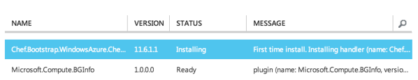
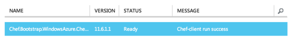

Chef for Microsoft Windows
Note
This page collects information about Chef that is specific to using Chef with Microsoft Windows.
The chef-client has specific components that are designed to support unique aspects of the Microsoft Windows platform, including Windows PowerShell, Internet Information Services (IIS), and SQL Server.
The chef-client is installed on a machine running Microsoft Windows by using a Microsoft Installer Package (MSI)
Six resources dedicated to the Microsoft Windows platform are built into the chef-client: batch, dsc_script, env, powershell_script, registry_key, and windows_package
Use the dsc_resource to use Powershell DSC resources in Chef!
Two knife plugins dedicated to the Microsoft Windows platform are available: knife azure is used to manage virtual instances in Microsoft Azure; knife windows is used to interact with and manage physical nodes that are running Microsoft Windows, such as desktops and servers
Many community cookbooks on Supermarket provide Windows specific support. Chef maintains cookbooks for PowerShell, IIS, SQL Server, and Windows.
The following Microsoft Windows platform-specific helpers can be used in recipes:
Helper Description cluster? Use to test for a Cluster SKU (Windows Server 2003 and later). core? Use to test for a Core SKU (Windows Server 2003 and later). datacenter? Use to test for a Datacenter SKU. marketing_name Use to display the marketing name for a Microsoft Windows platform. windows_7? Use to test for Windows 7. windows_8? Use to test for Windows 8. windows_8_1? Use to test for Windows 8.1. windows_2000? Use to test for Windows 2000. windows_home_server? Use to test for Windows Home Server. windows_server_2003? Use to test for Windows Server 2003. windows_server_2003_r2? Use to test for Windows Server 2003 R2. windows_server_2008? Use to test for Windows Server 2008. windows_server_2008_r2? Use to test for Windows Server 2008 R2. windows_server_2012? Use to test for Windows Server 2012. windows_server_2012_r2? Use to test for Windows Server 2012 R2. windows_vista? Use to test for Windows Vista. windows_xp? Use to test for Windows XP. Two community provisioners for Kitchen: kitchen-dsc and kitchen-pester
The most popular core resources in the chef-client—cookbook_file, directory, env, execute, file, group, http_request, link, mount, package, remote_directory, remote_file, ruby_block, service, template, and user—work the same way in Microsoft Windows as they do on any UNIX- or Linux-based platform.
The file-based resources—cookbook_file, file, remote_file, and template—have attributes that support unique requirements within the Microsoft Windows platform, including inherits (for file inheritence), mode (for octal modes), and rights (for access control lists, or ACLs).
Note
The Microsoft Windows platform does not support running as an alternate user unless full credentials (a username and password or equivalent) are specified.
The following sections are pulled in from the larger https://docs.chef.io/ site and represents the documentation that is specific to the Microsoft Windows platform, compiled here into a single-page reference.
Install the chef-client on Windows
The chef-client can be installed on machines running Microsoft Windows in the following ways:
- By using the knife windows plugin to bootstrap the chef-client; this process requires the target node be available via SSH (port 22) or by using the HTTP or HTTPS ports that are required by WinRM
- By downloading the chef-client to the target node, and then running the Microsoft Installer Package (MSI) locally
- By using an existing process already in place for managing Microsoft Windows machines, such as System Center
To run the chef-client at periodic intervals (so that it can check in with the Chef server automatically), configure the chef-client to run as a service or as a scheduled task. (The chef-client can be configured to run as a service during the setup process.)
The chef-client can be used to manage machines that run on the following versions of Microsoft Windows:
| Operating System | Version | Architecture |
|---|---|---|
| Windows | 2008 R2, 2012, 2012 R2 | x86_64 |
(The recommended amount of RAM available to the chef-client during a chef-client run is 512MB. Each node and workstation must have access to the Chef server via HTTPS. Ruby version 1.9.1 or Ruby version 1.9.2 with SSL bindings is required.)
The Microsoft Installer Package (MSI) for Microsoft Windows is available at http://www.chef.io/chef/install/. From the drop-downs, select the operating system (Windows), then the version, and then the architecture.
After the chef-client is installed, it is located at C:\chef. The main configuration file for the chef-client is located at C:\chef\client.rb.
Set the System Ruby
To set the system Ruby for the Microsoft Windows platform the steps described for all platforms are true, but then require the following manual edits to the chef shell-init bash output for the Microsoft Windows platform:
- Add quotes around the variable assignment strings.
- Convert C:/ to /c/.
- Save those changes.
Spaces and Directories
Directories that are used by Chef on the Microsoft Windows platform cannot have spaces. For example, /c/Users/Steven Danno will not work, but /c/Users/StevenDanno will.
A different issue exists with the knife command line tool that is also related to spaces and directories. The knife cookbook site install subcommand will fail when the Microsoft Windows directory contains a space.
Top-level Directory Names
Paths can be longer in UNIX and Linux environments than they can be in Microsoft Windows. Microsoft Windows will throw errors when path name lengths are too long. For this reason, it’s often helpful to use a very short top-level directory in Microsoft Windows, much like what is done in UNIX and Linux. For example, Chef uses /opt/ to install the Chef development kit on Mac OS X. A similar approach can be done on Microsoft Windows, by creating a top-level directory with a short name. For example: c:\chef.
Use knife-windows
The knife windows subcommand is used to configure and interact with nodes that exist on server and/or desktop machines that are running Microsoft Windows. Nodes are configured using WinRM, which allows native objects—batch scripts, Windows PowerShell scripts, or scripting library variables—to be called by external applications. The knife windows subcommand supports NTLM and Kerberos methods of authentication.
For more information about the knife windows plugin, see windows.
Ports
WinRM requires that a target node be accessible via the ports configured to support access via HTTP or HTTPS.
Msiexec.exe
Msiexec.exe is used to install the chef-client on a node as part of a bootstrap operation. The actual command that is run by the default bootstrap script is:
$ msiexec /qn /i "%LOCAL_DESTINATION_MSI_PATH%"
where /qn is used to set the user interface level to “No UI”, /i is used to define the location in which the chef-client is installed, and "%LOCAL_DESTINATION_MSI_PATH%" is a variable defined in the default windows-chef-client-msi.erb bootstrap template. See http://msdn.microsoft.com/en-us/library/aa367988%28v=vs.85%29.aspx for more information about the options available to Msiexec.exe.
ADDLOCAL Options
The ADDLOCAL parameter adds two setup options that are specific to the chef-client. These options can be passed along with an Msiexec.exe command:
| Option | Description |
|---|---|
| ChefClientFeature | Use to install the chef-client. |
| ChefServiceFeature | Use to configure the chef-client as a service in Microsoft Windows. |
| ChefPSModuleFeature | Used to install the chef PowerShell module. This will enable chef command line utilities within PowerShell. |
First install the chef-client, and then enable it to run as a service. For example:
$ msiexec /qn /i C:\inst\chef-client-12.4.3-1.windows.msi ADDLOCAL="ChefClientFeature,ChefServiceFeature,ChefPSModuleFeature"
Use MSI Installer
A Microsoft Installer Package (MSI) is available for installing the chef-client on a Microsoft Windows machine.
To install the chef-client on Microsoft Windows, do the following:
Click the Chef Client tab.
Select Windows, a version, and an architecture.
Under Downloads, select the version of the chef-client to download, and then click the link that appears below to download the package.
Ensure that the MSI is on the target node.
Run the MSI package and use all the default options:

then:
then:
Note
The chef-client must be run as a service for it to be able to regularly check in with the Chef server. Select the Chef Client Service option to have the MSI configure the chef-client as a service.
then:
then:
then:
Enable as a Service
To run the chef-client at periodic intervals (so that it can check in with the Chef server automatically), configure the chef-client to run as a service or as a scheduled task. This can be done via the MSI, by selecting the Chef Client Service option on the Custom Setup page or by running the following command after the chef-client is installed:
$ chef-service-manager -a install
and then start the chef-client as a service:
$ chef-service-manager -a start
After the chef-client is configured to run as a service, the default file path is: c:\chef\chef-client.log.
Use an Existing Process
Many organizations already have processes in place for managing the applications and settings on various Microsoft Windows machines. For example, System Center. The chef-client can be installed using this method.
PATH System Variable
On Microsoft Windows, the chef-client must have two entries added to the PATH environment variable:
- C:\opscode\chef\bin
- C:\opscode\chef\embedded\bin
This is typically done during the installation of the chef-client automatically. If these values (for any reason) are not in the PATH environment variable, the chef-client will not run properly.
This value can be set from a recipe. For example, from the php cookbook:
# the following code sample comes from the ``package`` recipe in the ``php`` cookbook: https://github.com/chef-cookbooks/php
if platform?('windows')
include_recipe 'iis::mod_cgi'
install_dir = File.expand_path(node['php']['conf_dir']).gsub('/', '\\')
windows_package node['php']['windows']['msi_name'] do
source node['php']['windows']['msi_source']
installer_type :msi
options %W[
/quiet
INSTALLDIR="#{install_dir}"
ADDLOCAL=#{node['php']['packages'].join(',')}
].join(' ')
end
...
ENV['PATH'] += ";#{install_dir}"
windows_path install_dir
...
Proxy Settings
To determine the current proxy server on the Microsoft Windows platform:
- Open Internet Properties.
- Open Connections.
- Open LAN settings.
- View the Proxy server setting. If this setting is blank, then a proxy server may not be available.
To configure proxy settings in Microsoft Windows:
- Open System Properties.
- Open Environment Variables.
- Open System variables.
- Set http_proxy and https_proxy to the location of your proxy server. This value MUST be lowercase.
Microsoft Azure portal
Microsoft Azure is a cloud hosting platform from Microsoft that provides virtual machines. The Azure production portal (https://portal.azure.com/) can boostrap Microsoft Windows-based virtual machines that are already provisioned with the chef-client running as a background service. Once provisioned, these virtual machines are ready to be managed by Chef.
To use the Chef integration with the Azure portal, all you need is a Chef server and the Azure portal. Choose a Chef version or deploy a Chef server via the Azure Marketplace (https://azure.microsoft.com/en-us/marketplace/partners/chef-software/chef-server/).
The Chef extension on the Azure portal may be used on the following platforms:
- Windows Server 2012, 2012r2
- Ubuntu 12.04 LTS, 14.04 LTS
Note
Virtual machines running on Microsoft Azure can also be provisioned from the command-line using the knife azure plugin for knife. This approach is ideal for cases that require automation or for users who are more suited to command-line interfaces.
Azure Marketplace
Chef provides a fully functional Chef server that can be launched from the Azure Marketplace. This server is preconfigured with Chef server, the Chef management console, Reporting, and Chef Analytics. This configuration is free to use for deployments under 25 nodes, and can be licensed for deployments beyond 25 nodes. (See https://www.chef.io/pricing/ for more information about licensing more than 25 nodes.)
Before getting started, you will need a functioning workstation. Install the Chef development kit on that workstation.
Note
The following steps assume that Chef is installed on the workstation and that the knife ssl fetch subcommand is available. The knife ssl fetch subcommand was added to Chef in the 11.16 release of the chef-client, and then packaged as part of the Chef development kit starting with the 0.3 release.)
Sign in to the Azure portal (https://portal.azure.com). (The Azure Marketplace offering is only available via the preview portal.) Authenticate using your Microsoft Azure account credentials.
Click the New icon in the lower left corner of the portal.
Click Compute, then click Azure Marketplace.
In the search box enter Chef Server.
Select the Chef Server 12 offering that is appropriate for your size.
Note
The Chef server is available on the Azure Marketplace in 25, 50, 100, 150, 200, and 250 licensed images, as well as a “Bring Your Own License” image.
Click Create and follow the steps to launch the Chef server, providing a host name, user name, password or SSH key, and any additional information required. You will also select your deployment model here.
Create a DNS Name label for the instance. <https://azure.microsoft.com/en-us/documentation/articles/virtual-machines-create-fqdn-on-portal/>
Once the instance is launched you will need to create an account to use with the Chef management console. To do this, open an SSH connection to the host using the user name and password (or SSH key) provided when you launched the instance.
Wait for the Chef server to complete initial configuration. You’ll want to tail the cloud-init logfile until it has finished. For example:
$ tailf /var/log/cloud-init-output.log
will return something similar to:
cloud-init v. 0.7.5 finished at Thu, 05 May 2016 21:41:21 +0000. Datasource DataSourceAzureNet [seed=/dev/sr0]. Up 740.33 seconds
After cloud-init has completed, configure the Chef server with the DNS Name.
Note
In the following steps substitute <fqdn> for the fully qualified domain DNS NAME that you created.
Remove the Nginx configuration for the existing Chef Analytics configuration:
$ sudo rm /var/opt/opscode/nginx/etc/nginx.d/analytics.conf
Update the /etc/chef-marketplace/marketplace.rb file to include the api_fqdn of the machine:
$ echo 'api_fqdn "<fqdn>"' | sudo tee -a /etc/chef-marketplace/marketplace.rb
Update the /etc/opscode-analytics/opscode-analytics.rb file to include the analytics_fqdn of the machine:
$ echo 'analytics_fqdn "<fqdn>"' | sudo tee -a /etc/opscode-analytics/opscode-analytics.rb
Run the following command to update the hostname and reconfigure the software:
$ sudo chef-marketplace-ctl hostname <fqdn>
Run the following command to update reconfigure Chef Analytics:
$ sudo opscode-analytics-ctl reconfigure
Now proceed to the web based setup wizard https://<fqdn>/signup.
Before you can run through the wizard you must provide the VM Name or DNS Label of the instance in order to ensure that only you are configuring the Chef server.
Follow the links to sign up for a new account and download the starter kit.
Extract the starter kit zip file downloaded. Open a command prompt and change into the chef-repo directory extracted from the starter kit.
Run knife ssl fetch to retrieve the SSL keys for the Chef server.
Run knife client list to test the connection to the Chef server. The command should return <orgname>-validator, where <orgname> is the name of the organization you previously created. You are now ready to add virtual machines to your Chef server.
chef-client Settings
Before virtual machines are created using the Azure portal, some chef-client-specific settings will need to be identified so they may be provided to the Azure portal during the virtual machine creation workflow. These settings are available from the chef-client configuration settings:
- The chef_server_url and validaton_client_name. These are settings in the client.rb file.
- The file for the validator key.
Set up Virtual Machines
Once this information has been identified, launch the Azure portal, start the virtual machine creation workflow, and then bootstrap virtual machines with Chef:
Sign in to the Azure production portal (https://portal.azure.com/). Authenticate using your Microsoft Azure account credentials.
Choose Virtual Machines in the left pane of the portal.
Click the New option at the bottom of the portal.
Choose Virtual Machine, and then From Gallery.
Choose one of the following Featured Images (currently only Microsoft Windows images are supported): Windows Server 2012 R2 Datacenter or Windows Server 2012 Datacenter.
Fill in the virtual machine configuration information, such as machine name, user name, and so on. When finished, click to the next page.
Note
It’s best to use a new computer name each time through this workflow. This will help to avoid conflicts with virtual machine names that may have been previously registered on the Chef server.
Make the desired changes, if any, to the cloud service name, storage account, endpoints, etc., and then click to the next page.
Install Chef. Click the checkbox next to Chef to configure virtual machines using with Chef:

Click the From Local button next to the client.rb text box, and then browse to upload the client.rb file.
Note
The client.rb must be correctly configured to communicate to the Chef server. Specifically, it must have valid values for the following two settings: chef_server_url and validaton_client_name.
Use the From Local button next to the validation key text box to locate a local copy of the validation key.
Optional. Use a run-list to specify what should be run when the virtual machine is provisioned, such as using the run-list to provision a virtual machine with Internet Information Services (IIS). Use the iis cookbook and the default recipe to build a run-list. For example:
iisor:
iis::default
or:
recipe['iis']
A run-list can also be built using a role. For example, if a role named backend_server is defined on the Chef server, the run-list would look like:
role['backend_server']
Even without a run-list, the virtual machine will periodically check with the Chef server to see if the configuration requirements change. This means that the run-list can be updated later, by editing the run-list to add the desired run-list items by using the Chef server web user interface or by using the knife command line tool.
Note
A run-list may only refer to roles and/or recipes that have already been uploaded to the Chef server.
Click the checkmark button to complete the page. Provisioning will begin and the application will return to the Virtual Machines page showing the list of available virtual machines.
When the virtual machine has reached the status starting, click the virtual machine name to go to a page that contains more detail. Click dashboard to see more detailed status, and scroll down to the area that says extensions.
Once the virtual machine has gone far enough in the running(provisioning) state, some entries should appear under status, like this:
Once finished, something like the following will be shown:

After the process is complete, the virtual machine will be registered with the Chef server and it will have been provisioned with the configuration (applications, services, etc.) from the specified run-list. The Chef server can now be used to perform all ongoing management of the virtual machine node.
Log Files
If the Azure portal displays an error in dashboard, check the log files. The log files are created by the chef-client. The log files can be accessed from within the Azure portal or by running the chef-client on the node itself and then reproducing the issue interactively.
From the Azure portal
Log files are available from within the Azure portal:
Select Virtual Machines in the left pane of the Azure portal.
Select the virtual machine that has the error status.
Click the Connect button at the bottom of the portal to launch a Windows Remote Desktop session, and then log in to the virtual machine.
Start up a Windows PowerShell command shell.
$ cd c:\windowsazure\logs ls r chef*.log
This should display the log files, including the chef-client log file.
From the chef-client
The chef-client can be run interactively by using Windows Remote Desktop to connect to the virtual machine, and then running the chef-client:
Log into the virtual machine.
Start up a Windows PowerShell command shell.
Run the following command:
$ chef-client -l debug
View the logs. On a linux system, the Chef client logs are saved to /var/log/azure/Chef.Bootstrap.WindowsAzure.LinuxChefClient/<extension-version-number>/chef-client.log and can be viewed using the following command:
$ tail -f /var/log/azure/Chef.Bootstrap.WindowsAzure.LinuxChefClient/1210.12.102.1000/chef-client.log
Troubleshoot Log Files
After the log files have been located, open them using a text editor to view the log file. The most common problem are below:
- Connectivity errors with the Chef server caused by incorrect settings in the client.rb file. Ensure that the chef_server_url value in the client.rb file is the correct value and that it can be resolved.
- An invalid validator key has been specified. This will prevent the chef-client from authenticating to the Chef server. Ensure that the validaton_client_name value in the client.rb file is the correct value
- The name of the node is the same as an existing node. Node names must be unique. Ensure that the name of the virtual machine in Microsoft Azure has a unique name.
- An error in one the run-list. The log file will specify the details about errors related to the run-list.
Knife
knife is a command-line tool that provides an interface between a local chef-repo and the Chef server. knife helps users to manage:
- Nodes
- Cookbooks and recipes
- Roles
- Stores of JSON data (data bags), including encrypted data
- Environments
- Cloud resources, including provisioning
- The installation of the chef-client on management workstations
- Searching of indexed data on the Chef server
Set the Text Editor
Some knife commands, such as knife data bag edit, require that information be edited as JSON data using a text editor. For example, the following command:
$ knife data bag edit admins admin_name
will open up the text editor with data similar to:
{
"id": "admin_name"
}
Changes to that file can then be made:
{
"id": "Justin C."
"description": "I am passing the time by letting time pass over me ..."
}
The type of text editor that is used by knife can be configured by adding an entry to the knife.rb file or by setting an EDITOR environment variable. For example, to configure the text editor to always open with vim, add the following to the knife.rb file:
knife[:editor] = "/usr/bin/vim"
When a Microsoft Windows file path is enclosed in a double-quoted string (” ”), the same backslash character (\) that is used to define the file path separator is also used in Ruby to define an escape character. The knife.rb file is a Ruby file; therefore, file path separators must be escaped. In addition, spaces in the file path must be replaced with ~1 so that the length of each section within the file path is not more than 8 characters. For example, if EditPad Pro is the text editor of choice and is located at the following path:
C:\\Program Files (x86)\EditPad Pro\EditPad.exe
the setting in the knife.rb file would be similar to:
knife[:editor] = "C:\\Progra~1\\EditPa~1\\EditPad.exe"
One approach to working around the double- vs. single-quote issue is to put the single-quotes outside of the double-quotes. For example, for Notepad++:
knife[:editor] = '"C:\Program Files (x86)\Notepad++\notepad++.exe" -nosession -multiInst'
for Sublime Text:
knife[:editor] = '"C:\Program Files\Sublime Text 2\sublime_text.exe" --wait'
for TextPad:
knife[:editor] = '"C:\Program Files (x86)\TextPad 7\TextPad.exe"'
and for vim:
knife[:editor] = '"C:\Program Files (x86)\vim\vim74\gvim.exe"'
Quotes, Windows
When running knife in Microsoft Windows, a string may be interpreted as a wildcard pattern when quotes are not present in the command. The number of quotes to use depends on the shell from which the command is being run.
When running knife from the command prompt, a string should be surrounded by single quotes (' '). For example:
$ knife node run_list set test-node 'recipe[iptables]'
When running knife from Windows PowerShell, a string should be surrounded by triple single quotes (''' '''). For example:
$ knife node run_list set test-node '''recipe[iptables]'''
Import-Module chef
The chef-client version 12.4 release adds an optional feature to the Microsoft Installer Package (MSI) for Chef. This feature enables the ability to pass quoted strings from the Windows PowerShell command line without the need for triple single quotes (''' '''). This feature installs a Windows PowerShell module (typically in C:\opscode\chef\modules) that is also appended to the PSModulePath environment variable. This feature is not enabled by default. To activate this feature, run the following command from within Windows PowerShell:
$ Import-Module chef
or add Import-Module chef to the profile for Windows PowerShell located at:
~\Documents\WindowsPowerShell\Microsoft.PowerShell_profile.ps1
This module exports cmdlets that have the same name as the command-line tools—chef-client, knife, chef-apply—that are built into Chef.
For example:
$ knife exec -E 'puts ARGV' """&s0meth1ng"""
is now:
$ knife exec -E 'puts ARGV' '&s0meth1ng'
and:
$ knife node run_list set test-node '''role[ssssssomething]'''
is now:
$ knife node run_list set test-node 'role[ssssssomething]'
To remove this feature, run the following command from within Windows PowerShell:
$ Remove-Module chef
Ampersands, Windows
When running knife in Microsoft Windows, an ampersand (&) is a special character and must be protected by quotes when it appears in a command. The number of quotes to use depends on the shell from which the command is being run.
When running knife from the command prompt, an ampersand should be surrounded by quotes ("&"). For example:
$ knife bootstrap windows winrm -P "&s0meth1ng"
When running knife from Windows PowerShell, an ampersand should be surrounded by triple quotes ("""&"""). For example:
$ knife bootstrap windows winrm -P """&s0meth1ng"""
knife bootstrap
A node is any physical, virtual, or cloud machine that is configured to be maintained by a chef-client. A bootstrap is a process that installs the chef-client on a target system so that it can run as a chef-client and communicate with a Chef server. There are two ways to do this:
- Use the knife bootstrap subcommand to bootstrap a node using the omnibus installer
- Use an unattended install to bootstrap a node from itself, without using SSH or WinRM
Use the knife bootstrap subcommand to run a bootstrap operation that installs the chef-client on the target system. The bootstrap operation must specify the IP address or FQDN of the target system.
Note
To bootstrap the chef-client on Microsoft Windows machines, the knife-windows plugins is required, which includes the necessary bootstrap scripts that are used to do the actual installation.
Options
Note
Review the list of common options available to this (and all) knife subcommands and plugins.
This subcommand has the following options:
- -A, --forward-agent
- Enable SSH agent forwarding.
- --bootstrap-curl-options OPTIONS
- Arbitrary options to be added to the bootstrap command when using cURL. This option may not be used in the same command with --bootstrap-install-command.
- --bootstrap-install-command COMMAND
- Execute a custom installation command sequence for the chef-client. This option may not be used in the same command with --bootstrap-curl-options, --bootstrap-install-sh, or --bootstrap-wget-options.
- --bootstrap-install-sh URL
- Fetch and execute an installation script at the specified URL. This option may not be used in the same command with --bootstrap-install-command.
- --bootstrap-no-proxy NO_PROXY_URL_or_IP
A URL or IP address that specifies a location that should not be proxied.
Note
This option is used internally by Chef to help verify bootstrap operations during testing and should never be used during an actual bootstrap operation.
- --bootstrap-proxy PROXY_URL
- The proxy server for the node that is the target of a bootstrap operation.
- --bootstrap-vault-file VAULT_FILE
- The path to a JSON file that contains a list of vaults and items to be updated.
- --bootstrap-vault-item VAULT_ITEM
- A single vault and item to update as vault:item.
- --bootstrap-vault-json VAULT_JSON
A JSON string that contains a list of vaults and items to be updated.
For example:
--bootstrap-vault-json '{ "vault1": ["item1", "item2"], "vault2": "item2" }'- --bootstrap-version VERSION
- The version of the chef-client to install.
- --bootstrap-wget-options OPTIONS
- Arbitrary options to be added to the bootstrap command when using GNU Wget. This option may not be used in the same command with --bootstrap-install-command.
- -E ENVIRONMENT, --environment ENVIRONMENT
- The name of the environment. When this option is added to a command, the command will run only against the named environment.
- -G GATEWAY, --ssh-gateway GATEWAY
- The SSH tunnel or gateway that is used to run a bootstrap action on a machine that is not accessible from the workstation.
- --hint HINT_NAME[=HINT_FILE]
An Ohai hint to be set on the target node.
Ohai hints are used to tell Ohai something about the system that it is running on that it would not be able to discover itself. An Ohai hint exists if a JSON file exists in the hint directory with the same name as the hint. For example, calling hint?('antarctica') in an Ohai plugin would return an empty hash if the file antarctica.json existed in the hints directory, and return nil if the file does not exist.
If the hint file contains JSON content, it will be returned as a hash from the call to hint?.
{ "snow": true, "penguins": "many" }
antarctica_hint = hint?('antarctica') if antarctica_hint['snow'] "There are #{antarctica_hint['penguins']} penguins here." else 'There is no snow here, and penguins like snow.' end
The default directory in which hint files are located is /etc/chef/ohai/hints/. Use the Ohai::Config[:hints_path] setting in the client.rb file to customize this location.
HINT_FILE is the name of the JSON file. HINT_NAME is the name of a hint in a JSON file. Use multiple --hint options to specify multiple hints.
- -i IDENTITY_FILE, --ssh-identity-file IDENTITY_FILE
- The SSH identity file used for authentication. Key-based authentication is recommended.
- -j JSON_ATTRIBS, --json-attributes JSON_ATTRIBS
- A JSON string that is added to the first run of a chef-client.
- --json-attribute-file FILE
A JSON file to be added to the first run of chef-client.
New in Chef client 12.6.
- -N NAME, --node-name NAME
The name of the node.
Note
This option is required for a validatorless bootstrap (as of Chef client 12.4).
- --[no-]fips
- Allows OpenSSL to enforce FIPS-validated security during the chef-client run.
- --[no-]host-key-verify
- Use --no-host-key-verify to disable host key verification. Default setting: --host-key-verify.
- --[no-]node-verify-api-cert
- Verify the SSL certificate on the Chef server. When true, the chef-client always verifies the SSL certificate. When false, the chef-client uses the value of ssl_verify_mode to determine if the SSL certificate requires verification. If this option is not specified, the setting for verify_api_cert in the configuration file is applied.
- --node-ssl-verify-mode PEER_OR_NONE
Set the verify mode for HTTPS requests.
Use none to do no validation of SSL certificates.
Use peer to do validation of all SSL certificates, including the Chef server connections, S3 connections, and any HTTPS remote_file resource URLs used in the chef-client run. This is the recommended setting.
- -p PORT, --ssh-port PORT
- The SSH port.
- -P PASSWORD, --ssh-password PASSWORD
- The SSH password. This can be used to pass the password directly on the command line. If this option is not specified (and a password is required) knife prompts for the password.
- --prerelease
- Install pre-release gems.
- -r RUN_LIST, --run-list RUN_LIST
- A comma-separated list of roles and/or recipes to be applied.
- --secret SECRET
- The encryption key that is used for values contained within a data bag item.
- --secret-file FILE
- The path to the file that contains the encryption key.
- --sudo
- Execute a bootstrap operation with sudo.
- --sudo-preserve-home
- Use to preserve the non-root user’s HOME environment.
- -t TEMPLATE, --bootstrap-template TEMPLATE
- The bootstrap template to use. This may be the name of a bootstrap template—chef-full, for example—or it may be the full path to an Embedded Ruby (ERB) template that defines a custom bootstrap. Default value: chef-full, which installs the chef-client using the omnibus installer on all supported platforms.
- --use-sudo-password
- Perform a bootstrap operation with sudo; specify the password with the -P (or --ssh-password) option.
- -V -V
- Run the initial chef-client run at the debug log-level (e.g. chef-client -l debug).
- -x USERNAME, --ssh-user USERNAME
- The SSH user name.
Note
See knife.rb for more information about how to add certain knife options as settings in the knife.rb file.
Custom Templates
The chef-full distribution uses the omnibus installer. For most bootstrap operations, regardless of the platform on which the target node is running, using the chef-full distribution is the best approach for installing the chef-client on a target node. In some situations, using another supported distribution is necessary. And in some situations, a custom template may be required.
For example, the default bootstrap operation relies on an Internet connection to get the distribution to the target node. If a target node cannot access the Internet, then a custom template can be used to define a specific location for the distribution so that the target node may access it during the bootstrap operation.
For example, a bootstrap template file named “sea_power”:
$ knife bootstrap 123.456.7.8 -x username -P password --sudo --bootstrap-template "sea_power"
The following examples show how a bootstrap template file can be customized for various platforms.
Microsoft Windows
The following example shows how to modify the default script for Microsoft Windows and Windows PowerShell:
@setlocal
<%= "SETX HTTP_PROXY \"#{knife_config[:bootstrap_proxy]}\"" if knife_config[:bootstrap_proxy] %>
@mkdir <%= bootstrap_directory %>
> <%= bootstrap_directory %>\wget.ps1 (
<%= win_wget_ps %>
)
:install
@rem Install Chef using chef-client MSI installer
<% url="http://reposerver.example.com/chef-client-12.0.2.windows.msi" -%>
@set "REMOTE_SOURCE_MSI_URL=<%= url %>"
@set "LOCAL_DESTINATION_MSI_PATH=<%= local_download_path %>"
@powershell -ExecutionPolicy Unrestricted -NoProfile -NonInteractive "& '<%= bootstrap_directory %>\wget.ps1' '%REMOTE_SOURCE_MSI_URL%' '%LOCAL_DESTINATION_MSI_PATH%'"
@REM Replace install_chef from knife-windows Gem with one that has extra flags to turn on Chef service feature -- only available in Chef >= 12.0.x
@REM <%= install_chef %>
@echo Installing Chef Client 12.0.2 with msiexec
@msiexec /q /i "%LOCAL_DESTINATION_MSI_PATH%" ADDLOCAL="ChefClientFeature,ChefServiceFeature"
@endlocal
@echo Writing validation key...
> <%= bootstrap_directory %>\validation.pem (
<%= validation_key %>
)
@echo Validation key written.
<% if @config[:encrypted_data_bag_secret] -%>
> <%= bootstrap_directory %>\encrypted_data_bag_secret (
<%= encrypted_data_bag_secret %>
)
<% end -%>
> <%= bootstrap_directory %>\client.rb (
<%= config_content %>
)
> <%= bootstrap_directory %>\first-boot.json (
<%= run_list %>
)
<%= start_chef %>
knife azure
Microsoft Azure is a cloud hosting platform from Microsoft that provides virtual machines for Linux and Windows Server, cloud and database services, and more. The knife azure subcommand is used to manage API-driven cloud servers that are hosted by Microsoft Azure.
Note
Review the list of common options available to this (and all) knife subcommands and plugins.
Install this plugin
To install the knife azure plugin using RubyGems, run the following command:
$ /opt/chef/embedded/bin/gem install knife-azure
where /opt/chef/embedded/bin/ is the path to the location where the chef-client expects knife plugins to be located. If the chef-client was installed using RubyGems, omit the path in the previous example.
Generate Certificates
The knife azure subcommand must use a management certificate for secure communication with Microsoft Azure. The management certificate is required for secure communication with the Microsoft Azure platform via the REST APIs. To generate the management certificate (.pem file):
Download the settings file: http://go.microsoft.com/fwlink/?LinkId=254432.
Extract the data from the ManagementCertificate field into a separate file named cert.pfx.
Decode the certificate file with the following command:
$ base64 -d cert.pfx > cert_decoded.pfx
Convert the decoded PFX file to a PEM file with the following command:
$ openssl pkcs12 -in cert_decoded.pfx -out managementCertificate.pem -nodes
Note
It is possible to generate certificates, and then upload them. See the following link for more information: www.windowsazure.com/en-us/manage/linux/common-tasks/manage-certificates/.
ag create
Use the ag create argument to create an affinity group.
Options
This argument has the following options:
- -a, --azure-affinity-group GROUP
- The affinity group to which the virtual machine belongs. Required when not using a service location. Required when not using --azure-service-location.
- --azure-ag-desc DESCRIPTION
- The description of the Microsoft Azure affinity group.
- --azure-publish-settings-file FILE_NAME
- The name of the Azure Publish Settings file, including the path. For example: "/path/to/your.publishsettings".
- -H HOST_NAME, --azure_host_name HOST_NAME
- The host name for the Microsoft Azure environment.
- -m LOCATION, --azure-service-location LOCATION
- The geographic location for a virtual machine and its services. Required when not using --azure-affinity-group.
- -p FILE_NAME, --azure-mgmt-cert FILE_NAME
- The name of the file that contains the SSH public key that is used when authenticating to Microsoft Azure.
- -S ID, --azure-subscription-id ID
- The subscription identifier for the Microsoft Azure portal.
- --verify-ssl-cert
- The SSL certificate used to verify communication over HTTPS.
ag list
Use the ag list argument to get a list of affinity groups.
Options
This argument has the following options:
- --azure-publish-settings-file FILE_NAME
- The name of the Azure Publish Settings file, including the path. For example: "/path/to/your.publishsettings".
- -H HOST_NAME, --azure_host_name HOST_NAME
- The host name for the Microsoft Azure environment.
- -p FILE_NAME, --azure-mgmt-cert FILE_NAME
- The name of the file that contains the SSH public key that is used when authenticating to Microsoft Azure.
- -S ID, --azure-subscription-id ID
- The subscription identifier for the Microsoft Azure portal.
- --verify-ssl-cert
- The SSL certificate used to verify communication over HTTPS.
image list
Use the image list argument to get a list of images that exist in a Microsoft Azure environment. Any image in this list may be used for provisioning.
Options
This argument has the following options:
- --azure-publish-settings-file FILE_NAME
- The name of the Azure Publish Settings file, including the path. For example: "/path/to/your.publishsettings".
- --full
- Show all fields for all images.
- -H HOST_NAME, --azure_host_name HOST_NAME
- The host name for the Microsoft Azure environment.
- -p FILE_NAME, --azure-mgmt-cert FILE_NAME
- The name of the file that contains the SSH public key that is used when authenticating to Microsoft Azure.
- -S ID, --azure-subscription-id ID
- The subscription identifier for the Microsoft Azure portal.
- --verify-ssl-cert
- The SSL certificate used to verify communication over HTTPS.
server create
Use the server create argument to create a new Microsoft Azure cloud instance. This will provision a new image in Microsoft Azure, perform a bootstrap (using the SSH protocol), and then install the chef-client on the target system so that it can be used to configure the node and to communicate with a Chef server.
Options
This argument has the following options:
- -a, --azure-affinity-group GROUP
- The affinity group to which the virtual machine belongs. Required when not using a service location. Required when not using --azure-service-location.
- --auto-update-client
- Enable automatic updates for the chef-client in Microsoft Azure. This option may only be used when --bootstrap-protocol is set to cloud-api. Default value: false.
- --azure-availability-set NAME
- The name of the availability set for the virtual machine.
- --azure-dns-name DNS_NAME
- Required. The name of the DNS prefix that is used to access the cloud service. This name must be unique within Microsoft Azure. Use with --azure-connect-to-existing-dns to use an existing DNS prefix.
- --azure-network-name NETWORK_NAME
- The network for the virtual machine.
- --azure-publish-settings-file FILE_NAME
- The name of the Azure Publish Settings file, including the path. For example: "/path/to/your.publishsettings".
- --azure-storage-account STORAGE_ACCOUNT_NAME
- The name of the storage account used with the hosted service. A storage account name may be between 3 and 24 characters (lower-case letters and numbers only) and must be unique within Microsoft Azure.
- --azure-subnet-name SUBNET_NAME
- The subnet for the virtual machine.
- --azure-vm-name NAME
- The name of the virtual machine. Must be unique within Microsoft Azure. Required for advanced server creation options.
- --azure-vm-ready-timeout TIMEOUT
- A number (in minutes) to wait for a virtual machine to reach the provisioning state. Default value: 10.
- --azure-vm-startup-timeout TIMEOUT
- A number (in minutes) to wait for a virtual machine to transition from the provisioning state to the ready state. Default value: 15.
- --bootstrap-protocol PROTOCOL
The protocol used to bootstrap on a machine that is running Windows Server: cloud-api, ssh, or winrm. Default value: winrm.
Use the cloud-api option to bootstrap a machine in Microsoft Azure. The bootstrap operation will enable the guest agent to install, configure, and run the chef-client on a node, after which the chef-client is configured to run as a daemon/service. (This is a similar process to using the Azure portal.)
Microsoft Azure maintains images of the chef-client on the guest, so connectivity between the guest and the workstation from which the bootstrap operation was initiated is not required, after a cloud-api bootstrap is started.
During the cloud-api bootstrap operation, knife does not print the output of the chef-client run like it does when the winrm and ssh options are used. knife reports only on the status of the bootstrap process: provisioning, installing, ready, and so on, along with reporting errors.
- --bootstrap-version VERSION
- The version of the chef-client to install.
- -c, --azure-connect-to-existing-dns
- Add a new virtual machine to the existing deployment and/or service. Use with --azure-dns-name to ensure the correct DNS is used.
- --cert-passphrase PASSWORD
- The password for the SSL certificate.
- --cert-path PATH
- The path to the location of the SSL certificate.
- -d DISTRO, --distro DISTRO
The template file to be used during a bootstrap operation. The following distributions are supported:
- chef-full (the default bootstrap)
- centos5-gems
- fedora13-gems
- ubuntu10.04-gems
- ubuntu10.04-apt
- ubuntu12.04-gems
- The name of a custom bootstrap template file.
When this option is used, knife searches for the template file in the following order:
- The bootstrap/ folder in the current working directory
- The bootstrap/ folder in the chef-repo
- The bootstrap/ folder in the ~/.chef/ directory
- A default bootstrap file.
Do not use the --template-file option when --distro is specified.
- -H HOST_NAME, --azure_host_name HOST_NAME
- The host name for the virtual machine.
- --hint HINT_NAME[=HINT_FILE]
An Ohai hint to be set on the target node.
Ohai hints are used to tell Ohai something about the system that it is running on that it would not be able to discover itself. An Ohai hint exists if a JSON file exists in the hint directory with the same name as the hint. For example, calling hint?('antarctica') in an Ohai plugin would return an empty hash if the file antarctica.json existed in the hints directory, and return nil if the file does not exist.
If the hint file contains JSON content, it will be returned as a hash from the call to hint?.
{ "snow": true, "penguins": "many" }
antarctica_hint = hint?('antarctica') if antarctica_hint['snow'] "There are #{antarctica_hint['penguins']} penguins here." else 'There is no snow here, and penguins like snow.' end
The default directory in which hint files are located is /etc/chef/ohai/hints/. Use the Ohai::Config[:hints_path] setting in the client.rb file to customize this location.
HINT_FILE is the name of the JSON file. HINT_NAME is the name of a hint in a JSON file. Use multiple --hint options to specify multiple hints.
- --host-name HOST_NAME
- The host name for the Microsoft Azure environment.
- -I IMAGE, --azure-source-image IMAGE
- The name of the disk image to be used to create the virtual machine.
- --identity-file IDENTITY_FILE
- The SSH identity file used for authentication. Key-based authentication is recommended.
- --identity-file_passphrase PASSWORD
- The passphrase for the SSH key. Use only with --identity-file.
- -j JSON_ATTRIBS, --json-attributes JSON_ATTRIBS
- A JSON string that is added to the first run of a chef-client.
- -m LOCATION, --azure-service-location LOCATION
- The geographic location for a virtual machine and its services. Required when not using --azure-affinity-group.
- -N NAME, --node-name NAME
- The name of the node. Node names, when used with Microsoft Azure, must be 91 characters or shorter.
- --[no-]host-key-verify
- Use --no-host-key-verify to disable host key verification. Default setting: --host-key-verify.
- -o DISK_NAME, --azure-os-disk-name DISK_NAME
- The operating system type of the Microsoft Azure OS image: Linux or Windows.
- -p FILE_NAME, --azure-mgmt-cert FILE_NAME
- The name of the file that contains the SSH public key that is used when authenticating to Microsoft Azure.
- -P PASSWORD, --ssh-password PASSWORD
- The SSH password. This can be used to pass the password directly on the command line. If this option is not specified (and a password is required) knife prompts for the password.
- --prerelease
- Install pre-release gems.
- -r RUN_LIST, --run-list RUN_LIST
- A comma-separated list of roles and/or recipes to be applied.
- -R ROLE_NAME, --role-name ROLE_NAME
- The name of the virtual machine.
- --ssh-port PORT
- The SSH port. Default value: 22.
- -t PORT_LIST, --tcp-endpoints PORT_LIST
- A comma-separated list of local and public TCP ports that are to be opened. For example: 80:80,433:5000.
- --template-file TEMPLATE
- The path to a template file to be used during a bootstrap operation.
- --thumbprint THUMBPRINT
- The thumbprint of the SSL certificate.
- -u PORT_LIST, ---udp-endpoints PORT_LIST
- A comma-separated list of local and public UDP ports that are to be opened. For example: 80:80,433:5000.
- --verify-ssl-cert
- The SSL certificate used to verify communication over HTTPS.
- --windows-auth-timeout MINUTES
- The amount of time (in minutes) to wait for authentication to succeed. Default value: 25.
- -x USER_NAME, --ssh-user USER_NAME
- The SSH user name.
- -z SIZE, --azure-vm-size SIZE
- The size of the virtual machine: ExtraSmall, Small, Medium, Large, or ExtraLarge. Default value: Small.
Examples
Provision an instance using new hosted service and storage accounts
To provision a medium-sized CentOS machine configured as a web server in the West US data center, while reusing existing hosted service and storage accounts, enter something like:
$ knife azure server create -r "role[webserver]" --service-location "West US"
--hosted-service-name webservers --storage-account webservers-storage --ssh-user foo
--ssh--password password --role-name web-apache-0001 --host-name web-apache
--tcp-endpoints 80:80,8080:8080 --source-image name_of_source_image --role-size Medium
Provision an instance using new hosted service and storage accounts
To provision a medium-sized CentOS machine configured as a web server in the West US data center, while also creating new hosted service and storage accounts, enter something like:
$ knife azure server create -r "role[webserver]" --service-location "West US" --ssh-user foo
--ssh--password password --role-name web-apache-0001 --host-name web-apache
--tcp-endpoints 80:80,8080:8080 --source-image name_of_source_image --role-size Medium
server delete
Use the server delete argument to delete one or more instances that are running in the Microsoft Azure cloud. To find a specific cloud instance, use knife azure server list. Use the --purge option to delete all associated node and client objects from the Chef server or use the knife node delete and knife client delete subcommands to delete specific node and client objects.
Options
This argument has the following options:
- --azure-dns-name NAME
- The name of the DNS server (also known as the Hosted Service Name).
- --azure-publish-settings-file FILE_NAME
- The name of the Azure Publish Settings file, including the path. For example: "/path/to/your.publishsettings".
- --delete-azure-storage-account
- Delete any corresponding storage account. When this option is true, any storage account not used by any virtual machine is deleted.
- -H HOST_NAME, --azure_host_name HOST_NAME
- The host name for the Microsoft Azure environment.
- -N NODE_NAME, --node-name NODE_NAME
- The name of the node to be deleted, if different from the server name. This must be used with the -p (purge) option.
- -p FILE_NAME, --azure-mgmt-cert FILE_NAME
- The name of the file that contains the SSH public key that is used when authenticating to Microsoft Azure.
- -P, --purge
- Destroy all corresponding nodes and clients on the Chef server, in addition to the Microsoft Azure node itself. This action (by itself) assumes that the node and client have the same name as the server; if they do not have the same names, then the --node-name option must be used to specify the name of the node.
- --preserve-azure-dns-name
- Preserve the DNS entries for the corresponding cloud services. If this option is false, any service not used by any virtual machine is deleted.
- --preserve-azure-os-disk
- Preserve the corresponding operating system disk.
- --preserve-azure-vhd
- Preserve the underlying virtual hard disk (VHD).
- -S ID, --azure-subscription-id ID
- The subscription identifier for the Microsoft Azure portal.
- --verify-ssl-cert
- The SSL certificate used to verify communication over HTTPS.
- --wait
- Pause the console until the server has finished processing the request.
server describe
Use the server describe argument to view a detailed description of one (or more) roles that exist in a Microsoft Azure cloud instance. For each specified role name, information such as status, size, hosted service name, deployment name, ports (open, local, public) and IP are displayed.
Syntax
This argument has the following syntax:
$ knife azure server describe [ROLE_NAME...] (options)
Options
This argument has the following options:
- --azure-publish-settings-file FILE_NAME
- The name of the Azure Publish Settings file, including the path. For example: "/path/to/your.publishsettings".
- -H HOST_NAME, --azure_host_name HOST_NAME
- The host name for the Microsoft Azure environment.
- -p FILE_NAME, --azure-mgmt-cert FILE_NAME
- The name of the file that contains the SSH public key that is used when authenticating to Microsoft Azure.
- -S ID, --azure-subscription-id ID
- The subscription identifier for the Microsoft Azure portal.
- --verify-ssl-cert
- The SSL certificate used to verify communication over HTTPS.
server list
Use the server list argument to find instances that are associated with a Microsoft Azure account. The results may show instances that are not currently managed by the Chef server.
Options
This argument has the following options:
- --azure-publish-settings-file FILE_NAME
- The name of the Azure Publish Settings file, including the path. For example: "/path/to/your.publishsettings".
- -H HOST_NAME, --azure_host_name HOST_NAME
- The host name for the Microsoft Azure environment.
- -p FILE_NAME, --azure-mgmt-cert FILE_NAME
- The name of the file that contains the SSH public key that is used when authenticating to Microsoft Azure.
- -S ID, --azure-subscription-id ID
- The subscription identifier for the Microsoft Azure portal.
- --verify-ssl-cert
- The SSL certificate used to verify communication over HTTPS.
server show
Use the server show argument to show the details for the named server (or servers).
Syntax
This argument has the following syntax:
$ knife azure server show SERVER [SERVER...] (options)
Options
This argument has the following options:
- --azure-publish-settings-file FILE_NAME
- The name of the Azure Publish Settings file, including the path. For example: "/path/to/your.publishsettings".
- -H HOST_NAME, --azure_host_name HOST_NAME
- The host name for the Microsoft Azure environment.
- -p FILE_NAME, --azure-mgmt-cert FILE_NAME
- The name of the file that contains the SSH public key that is used when authenticating to Microsoft Azure.
- -S ID, --azure-subscription-id ID
- The subscription identifier for the Microsoft Azure portal.
- --verify-ssl-cert
- The SSL certificate used to verify communication over HTTPS.
vnet create
Use the vnet create argument to create a virtual network.
Options
This argument has the following options:
- -a, --azure-affinity-group GROUP
- The affinity group to which the virtual machine belongs. Required when not using a service location.
- --azure-address-space CIDR
- The address space of the virtual network. Use with classless inter-domain routing (CIDR) notation.
- --azure-publish-settings-file FILE_NAME
- The name of the Azure Publish Settings file, including the path. For example: "/path/to/your.publishsettings".
- --azure-subnet-name CIDR
- The subnet for the virtual machine. Use with classless inter-domain routing (CIDR) notation.
- -H HOST_NAME, --azure_host_name HOST_NAME
- The host name for the Microsoft Azure environment.
- -n, --azure-network-name NETWORK_NAME
- The network for the virtual machine.
- -p FILE_NAME, --azure-mgmt-cert FILE_NAME
- The name of the file that contains the SSH public key that is used when authenticating to Microsoft Azure.
- -S ID, --azure-subscription-id ID
- The subscription identifier for the Microsoft Azure portal.
- --verify-ssl-cert
- The SSL certificate used to verify communication over HTTPS.
vnet list
Use the vnet list argument to get a list of virtual networks.
Options
This argument has the following options:
- --azure-publish-settings-file FILE_NAME
- The name of the Azure Publish Settings file, including the path. For example: "/path/to/your.publishsettings".
- -H HOST_NAME, --azure_host_name HOST_NAME
- The host name for the Microsoft Azure environment.
- -p FILE_NAME, --azure-mgmt-cert FILE_NAME
- The name of the file that contains the SSH public key that is used when authenticating to Microsoft Azure.
- -S ID, --azure-subscription-id ID
- The subscription identifier for the Microsoft Azure portal.
- --verify-ssl-cert
- The SSL certificate used to verify communication over HTTPS.
knife windows
The knife windows subcommand is used to configure and interact with nodes that exist on server and/or desktop machines that are running Microsoft Windows. Nodes are configured using WinRM, which allows native objects—batch scripts, Windows PowerShell scripts, or scripting library variables—to be called by external applications. The knife windows subcommand supports NTLM and Kerberos methods of authentication.
Note
Review the list of common options available to this (and all) knife subcommands and plugins.
Install this plugin
To install the knife windows plugin using RubyGems, run the following command:
$ /opt/chef/embedded/bin/gem install knife-windows
where /opt/chef/embedded/bin/ is the path to the location where the chef-client expects knife plugins to be located. If the chef-client was installed using RubyGems, omit the path in the previous example.
Requirements
This subcommand requires WinRM to be installed, and then configured correctly, including ensuring the correct ports are open. For more information, see: http://msdn.microsoft.com/en-us/library/aa384372(v=vs.85).aspx and/or http://support.microsoft.com/kb/968930. Use the quick configuration option in WinRM to allow outside connections and the entire network path from knife (and the workstation):
$ winrm quickconfig -q
The following WinRM configuration settings should be updated:
| Setting | Description |
|---|---|
| MaxMemoryPerShellMB | The chef-client and Ohai typically require more memory than the default setting allows. Increase this value to 300MB. Only required on Windows Server 2008 R2 Standard and older. The default in Windows Server 2012 was increased to 1024MB. |
| MaxTimeoutms | A bootstrap command can take longer than allowed by the default setting. Increase this value to 1800000 (30 minutes). |
| AllowUnencrypted | Set this value to true for development and testing purposes. |
| Basic | Set this value to true for development and testing purposes. The knife windows subcommand supports Kerberos and Basic authentication schemes. |
To update these settings, run the following commands:
$ winrm set winrm/config/winrs '@{MaxMemoryPerShellMB="300"}'
and:
$ winrm set winrm/config '@{MaxTimeoutms="1800000"}'
and:
$ winrm set winrm/config/service '@{AllowUnencrypted="true"}'
and then:
$ winrm set winrm/config/service/auth '@{Basic="true"}'
Ensure that the Windows Firewall is configured to allow WinRM connections between the workstation and the Chef server. For example:
$ netsh advfirewall firewall set rule name="Windows Remote Management (HTTP-In)" profile=public protocol=tcp localport=5985 remoteip=localsubnet new remoteip=any
Negotiate, NTLM
When knife is executed from a Microsoft Windows system, it is no longer necessary to make additional configuration of the WinRM listener on the target node to enable successful authentication from the workstation. It is sufficient to have a WinRM listener on the remote node configured to use the default configuration for winrm quickconfig. This is because knife windows supports the Microsoft Windows negotiate protocol, including NTLM authentication, which matches the authentication requirements for the default configuration of the WinRM listener.
Note
To use Negotiate or NTLM to authenticate as the user specified by the --winrm-user option, include the user’s Microsoft Windows domain, using the format domain\user, where the backslash (\) separates the domain from the user.
For example:
$ knife bootstrap windows winrm web1.cloudapp.net -r 'server::web' -x 'proddomain\webuser' -P 'password'
and:
$ knife bootstrap windows winrm db1.cloudapp.net -r 'server::db' -x '.\localadmin' -P 'password'
Domain Authentication
The knife windows plugin supports Microsoft Windows domain authentication. This requires:
- An SSL certificate on the target node
- The certificate details can be viewed and its thumbprint hex values copied
To create the listener over HTTPS, run the following command:
$ winrm create winrm/config/Listener?Address=IP:<ip_address>+Transport=HTTPS @{Hostname="<fqdn>";CertificateThumbprint="<hexidecimal_thumbprint_value>"}
where the CertificateThumbprint is the thumbprint hex value copied from the certificate details. (The hex value may require that spaces be removed before passing them to the node using the knife windows plugin.) WinRM 2.0 uses port 5985 for HTTP and port 5986 for HTTPS traffic, by default.
To bootstrap the target node using the knife bootstrap subcommand, first use the winrm argument in the knife windows plugin to verify communication with the node:
$ knife winrm 'node1.domain.com' 'dir' -m -x domain\\administrator -P 'super_secret_password' p 5986
and then run a command similar to the following:
$ knife bootstrap windows winrm 'node1.domain.com' -r 'role[webserver]' -x domain\\administrator -P 'password' -p 5986
bootstrap windows ssh
Use the bootstrap windows ssh argument to bootstrap chef-client installations in a Microsoft Windows environment, using a command shell that is native to Microsoft Windows.
Options
This argument has the following options:
- --auth-timeout MINUTES,
- The amount of time (in minutes) to wait for authentication to succeed. Default: 2.
- --bootstrap-no-proxy NO_PROXY_URL_or_IP
- A URL or IP address that specifies a location that should not be proxied.
- --bootstrap-proxy PROXY_URL
- The proxy server for the node that is the target of a bootstrap operation.
- --bootstrap-version VERSION
- The version of the chef-client to install.
- -d DISTRO, --distro DISTRO
The template file to be used during a bootstrap operation. The following distributions are supported:
- chef-full (the default bootstrap)
- centos5-gems
- fedora13-gems
- ubuntu10.04-gems
- ubuntu10.04-apt
- ubuntu12.04-gems
- The name of a custom bootstrap template file.
When this option is used, knife searches for the template file in the following order:
- The bootstrap/ folder in the current working directory
- The bootstrap/ folder in the chef-repo
- The bootstrap/ folder in the ~/.chef/ directory
- A default bootstrap file.
Do not use the --template-file option when --distro is specified.
- -G GATEWAY, --ssh-gateway GATEWAY
- The SSH tunnel or gateway that is used to run a bootstrap action on a machine that is not accessible from the workstation.
- -i IDENTITY_FILE, --identity-file IDENTITY_FILE
- The SSH identity file used for authentication. Key-based authentication is recommended.
- -j JSON_ATTRIBS, --json-attributes JSON_ATTRIBS
- A JSON string that is added to the first run of a chef-client.
- -N NAME, --node-name NAME
- The name of the node.
- --[no-]host-key-verify
- Use --no-host-key-verify to disable host key verification. Default setting: --host-key-verify.
- -p PORT, --ssh-port PORT
- The SSH port.
- -P PASSWORD, --ssh-password PASSWORD
- The SSH password. This can be used to pass the password directly on the command line. If this option is not specified (and a password is required) knife prompts for the password.
- --prerelease
- Install pre-release gems.
- -r RUN_LIST, --run-list RUN_LIST
- A comma-separated list of roles and/or recipes to be applied.
- -s SECRET, --secret
- The encryption key that is used for values contained within a data bag item.
- --secret-file SECRET_FILE
- The path to the file that contains the encryption key.
- --template-file TEMPLATE
- The path to a template file to be used during a bootstrap operation.
- -x USER_NAME, --ssh-user USER_NAME
- The SSH user name.
winrm
Use the winrm argument to create a connection to one or more remote machines. As each connection is created, a password must be provided. This argument uses the same syntax as the search subcommand.
WinRM requires that a target node be accessible via the ports configured to support access via HTTP or HTTPS.
Options
This argument has the following options:
- -a ATTR, --attribute ATTR
- The attribute used when opening an SSH connection. The default attribute is the FQDN of the host. Other possible values include a public IP address, a private IP address, or a hostname.
- -f CA_TRUST_FILE, --ca-trust-file CA_TRUST_FILE
- Optional. The certificate authority (CA) trust file used for SSL transport.
- -i IDENTITY_FILE, --identity-file IDENTITY_FILE
- The keytab file that contains the encryption key required by Kerberos-based authentication.
- --keytab-file KEYTAB_FILE
- The keytab file that contains the encryption key required by Kerberos-based authentication.
- -m, --manual-list
- Define a search query as a space-separated list of servers.
- -p PORT, --winrm-port PORT
- The WinRM port. The TCP port on the remote system to which knife windows commands that are made using WinRM are sent. Default: 5986 when --winrm-transport is set to ssl, otherwise 5985.
- -P PASSWORD, --winrm-password PASSWORD
- The WinRM password.
- -R KERBEROS_REALM, --kerberos-realm KERBEROS_REALM
- Optional. The administrative domain to which a user belongs.
- --returns CODES
- A comma-delimited list of return codes that indicate the success or failure of the command that was run remotely.
- -S KERBEROS_SERVICE, --kerberos-service KERBEROS_SERVICE
- Optional. The service principal used during Kerberos-based authentication.
- SEARCH_QUERY
- The search query used to return a list of servers to be accessed using SSH and the specified SSH_COMMAND. This option uses the same syntax as the search subcommand.
- SSH_COMMAND
- The command to be run against the results of a search query.
- --session-timeout MINUTES
- The amount of time (in minutes) for the maximum length of a WinRM session.
- -t TRANSPORT, --winrm-transport TRANSPORT
- The WinRM transport type. Possible values: ssl or plaintext.
- --winrm-authentication-protocol PROTOCOL
- The authentication protocol to be used during WinRM communication. Possible values: basic, kerberos or negotiate. Default value: negotiate.
- --winrm-ssl-verify-mode MODE
- The peer verification mode that is used during WinRM communication. Possible values: verify_none or verify_peer. Default value: verify_peer.
- -x USERNAME, --winrm-user USERNAME
- The WinRM user name.
Examples
Find Uptime for Web Servers
To find the uptime of all web servers, enter:
$ knife winrm "role:web" "net stats srv" -x Administrator -P password
Force a chef-client run
To force a chef-client run:
knife winrm 'ec2-50-xx-xx-124.amazonaws.com' 'chef-client -c c:/chef/client.rb' -m -x admin -P 'password'
ec2-50-xx-xx-124.amazonaws.com [date] INFO: Starting Chef Run (Version 0.9.12)
ec2-50-xx-xx-124.amazonaws.com [date] WARN: Node ip-0A502FFB has an empty run list.
ec2-50-xx-xx-124.amazonaws.com [date] INFO: Chef Run complete in 4.383966 seconds
ec2-50-xx-xx-124.amazonaws.com [date] INFO: cleaning the checksum cache
ec2-50-xx-xx-124.amazonaws.com [date] INFO: Running report handlers
ec2-50-xx-xx-124.amazonaws.com [date] INFO: Report handlers complete
Where in the examples above, [date] represents the date and time the long entry was created. For example: [Fri, 04 Mar 2011 22:00:53 +0000].
Bootstrap a Windows machine using SSH
To bootstrap a Microsoft Windows machine using SSH:
$ knife bootstrap windows ssh ec2-50-xx-xx-124.compute-1.amazonaws.com -r 'role[webserver],role[production]' -x Administrator -i ~/.ssh/id_rsa
Bootstrap a Windows machine using Windows Remote Management
To bootstrap a Microsoft Windows machine using WinRM:
$ knife bootstrap windows winrm ec2-50-xx-xx-124.compute-1.amazonaws.com -r 'role[webserver],role[production]' -x Administrator -P 'super_secret_password'
Resources
A resource is a statement of configuration policy that:
- Describes the desired state for a configuration item
- Declares the steps needed to bring that item to the desired state
- Specifies a resource type—such as package, template, or service
- Lists additional details (also known as resource properties), as necessary
- Are grouped into recipes, which describe working configurations
Common Functionality
The following sections describe Microsoft Windows-specific functionality that applies generally to all resources:
Relative Paths
The following relative paths can be used with any resource:
- #{ENV['HOME']}
- Use to return the ~ path in Linux and Mac OS X or the %HOMEPATH% in Microsoft Windows.
Windows File Security
To support Microsoft Windows security, the template, file, remote_file, cookbook_file, directory, and remote_directory resources support the use of inheritance and access control lists (ACLs) within recipes.
Note
Windows File Security applies to the cookbook_file, directory, file, remote_directory, remote_file, and template resources.
ACLs
The rights property can be used in a recipe to manage access control lists (ACLs), which allow permissions to be given to multiple users and groups. Use the rights property can be used as many times as necessary; the chef-client will apply them to the file or directory as required. The syntax for the rights property is as follows:
rights permission, principal, option_type => value
where
- permission
Use to specify which rights are granted to the principal. The possible values are: :read, :write, read_execute, :modify, and :full_control.
These permissions are cumulative. If :write is specified, then it includes :read. If :full_control is specified, then it includes both :write and :read.
(For those who know the Microsoft Windows API: :read corresponds to GENERIC_READ; :write corresponds to GENERIC_WRITE; :read_execute corresponds to GENERIC_READ and GENERIC_EXECUTE; :modify corresponds to GENERIC_WRITE, GENERIC_READ, GENERIC_EXECUTE, and DELETE; :full_control corresponds to GENERIC_ALL, which allows a user to change the owner and other metadata about a file.)
- principal
- Use to specify a group or user name. This is identical to what is entered in the login box for Microsoft Windows, such as user_name, domain\user_name, or user_name@fully_qualified_domain_name. The chef-client does not need to know if a principal is a user or a group.
- option_type
A hash that contains advanced rights options. For example, the rights to a directory that only applies to the first level of children might look something like: rights :write, 'domain\group_name', :one_level_deep => true. Possible option types:
Option Type Description :applies_to_children Specify how permissions are applied to children. Possible values: true to inherit both child directories and files; false to not inherit any child directories or files; :containers_only to inherit only child directories (and not files); :objects_only to recursively inherit files (and not child directories). :applies_to_self Indicates whether a permission is applied to the parent directory. Possible values: true to apply to the parent directory or file and its children; false to not apply only to child directories and files. :one_level_deep Indicates the depth to which permissions will be applied. Possible values: true to apply only to the first level of children; false to apply to all children.
For example:
resource 'x.txt' do
rights :read, 'Everyone'
rights :write, 'domain\group'
rights :full_control, 'group_name_or_user_name'
rights :full_control, 'user_name', :applies_to_children => true
end
or:
rights :read, ['Administrators','Everyone']
rights :full_control, 'Users', :applies_to_children => true
rights :write, 'Sally', :applies_to_children => :containers_only, :applies_to_self => false, :one_level_deep => true
Some other important things to know when using the rights attribute:
- Only inherited rights remain. All existing explicit rights on the object are removed and replaced.
- If rights are not specified, nothing will be changed. The chef-client does not clear out the rights on a file or directory if rights are not specified.
- Changing inherited rights can be expensive. Microsoft Windows will propagate rights to all children recursively due to inheritance. This is a normal aspect of Microsoft Windows, so consider the frequency with which this type of action is necessary and take steps to control this type of action if performance is the primary consideration.
Use the deny_rights property to deny specific rights to specific users. The ordering is independent of using the rights property. For example, it doesn’t matter if rights are granted to everyone is placed before or after deny_rights :read, ['Julian', 'Lewis'], both Julian and Lewis will be unable to read the document. For example:
resource 'x.txt' do
rights :read, 'Everyone'
rights :write, 'domain\group'
rights :full_control, 'group_name_or_user_name'
rights :full_control, 'user_name', :applies_to_children => true
deny_rights :read, ['Julian', 'Lewis']
end
or:
deny_rights :full_control, ['Sally']
Inheritance
By default, a file or directory inherits rights from its parent directory. Most of the time this is the preferred behavior, but sometimes it may be necessary to take steps to more specifically control rights. The inherits property can be used to specifically tell the chef-client to apply (or not apply) inherited rights from its parent directory.
For example, the following example specifies the rights for a directory:
directory 'C:\mordor' do
rights :read, 'MORDOR\Minions'
rights :full_control, 'MORDOR\Sauron'
end
and then the following example specifies how to use inheritance to deny access to the child directory:
directory 'C:\mordor\mount_doom' do
rights :full_control, 'MORDOR\Sauron'
inherits false # Sauron is the only person who should have any sort of access
end
If the deny_rights permission were to be used instead, something could slip through unless all users and groups were denied.
Another example also shows how to specify rights for a directory:
directory 'C:\mordor' do
rights :read, 'MORDOR\Minions'
rights :full_control, 'MORDOR\Sauron'
rights :write, 'SHIRE\Frodo' # Who put that there I didn't put that there
end
but then not use the inherits property to deny those rights on a child directory:
directory 'C:\mordor\mount_doom' do
deny_rights :read, 'MORDOR\Minions' # Oops, not specific enough
end
Because the inherits property is not specified, the chef-client will default it to true, which will ensure that security settings for existing files remain unchanged.
Attributes for File-based Resources
This resource has the following attributes:
| Attribute | Description |
|---|---|
| group | A string or ID that identifies the group owner by group name, including fully qualified group names such as domain\group or group@domain. If this value is not specified, existing groups remain unchanged and new group assignments use the default POSIX group (if available). |
| inherits | Microsoft Windows only. Whether a file inherits rights from its parent directory. Default value: true. |
| mode | If mode is not specified and if the file already exists, the existing mode on the file is used. If mode is not specified, the file does not exist, and the :create action is specified, the chef-client assumes a mask value of '0777' and then applies the umask for the system on which the file is to be created to the mask value. For example, if the umask on a system is '022', the chef-client uses the default value of '0755'. Microsoft Windows: A quoted 3-5 character string that defines the octal mode that is translated into rights for Microsoft Windows security. For example: '755', '0755', or 00755. Values up to '0777' are allowed (no sticky bits) and mean the same in Microsoft Windows as they do in UNIX, where 4 equals GENERIC_READ, 2 equals GENERIC_WRITE, and 1 equals GENERIC_EXECUTE. This property cannot be used to set :full_control. This property has no effect if not specified, but when it and rights are both specified, the effects are cumulative. |
| owner | A string or ID that identifies the group owner by user name, including fully qualified user names such as domain\user or user@domain. If this value is not specified, existing owners remain unchanged and new owner assignments use the current user (when necessary). |
| path | The full path to the file, including the file name and its extension. Microsoft Windows: A path that begins with a forward slash (/) will point to the root of the current working directory of the chef-client process. This path can vary from system to system. Therefore, using a path that begins with a forward slash (/) is not recommended. |
| rights | Microsoft Windows only. The permissions for users and groups in a Microsoft Windows environment. For example: rights <permissions>, <principal>, <options> where <permissions> specifies the rights granted to the principal, <principal> is the group or user name, and <options> is a Hash with one (or more) advanced rights options. |
Note
Use the owner and right attributes and avoid the group and mode attributes whenever possible. The group and mode attributes are not true Microsoft Windows concepts and are provided more for backward compatibility than for best practice.
Atomic File Updates
Atomic updates are used with file-based resources to help ensure that file updates can be made when updating a binary or if disk space runs out.
Atomic updates are enabled by default. They can be managed globally using the file_atomic_update setting in the client.rb file. They can be managed on a per-resource basis using the atomic_update property that is available with the cookbook_file, file, remote_file, and template resources.
Note
On certain platforms, and after a file has been moved into place, the chef-client may modify file permissions to support features specific to those platforms. On platforms with SELinux enabled, the chef-client will fix up the security contexts after a file has been moved into the correct location by running the restorecon command. On the Microsoft Windows platform, the chef-client will create files so that ACL inheritance works as expected.
Note
Atomic File Updates applies to the template resource.
batch
Use the batch resource to execute a batch script using the cmd.exe interpreter. The batch resource creates and executes a temporary file (similar to how the script resource behaves), rather than running the command inline. This resource inherits actions (:run and :nothing) and properties (creates, cwd, environment, group, path, timeout, and user) from the execute resource. Commands that are executed with this resource are (by their nature) not idempotent, as they are typically unique to the environment in which they are run. Use not_if and only_if to guard this resource for idempotence.
Syntax
A batch resource block executes a batch script using the cmd.exe interpreter:
batch 'echo some env vars' do
code <<-EOH
echo %TEMP%
echo %SYSTEMDRIVE%
echo %PATH%
echo %WINDIR%
EOH
end
The full syntax for all of the properties that are available to the batch resource is:
batch 'name' do
architecture Symbol
code String
command String, Array
creates String
cwd String
flags String
group String, Integer
guard_interpreter Symbol
interpreter String
notifies # see description
provider Chef::Provider::Batch
returns Integer, Array
subscribes # see description
timeout Integer, Float
user String, Integer
action Symbol # defaults to :run if not specified
end
where
- batch is the resource
- name is the name of the resource block
- command is the command to be run and cwd is the location from which the command is run
- action identifies the steps the chef-client will take to bring the node into the desired state
- architecture, code, command, creates, cwd, flags, group, guard_interpreter, interpreter, provider, returns, timeout, and user are properties of this resource, with the Ruby type shown. See “Properties” section below for more information about all of the properties that may be used with this resource.
Actions
This resource has the following actions:
- :nothing
- Define this resource block to do nothing until notified by another resource to take action. When this resource is notified, this resource block is either run immediately or it is queued up to be run at the end of the chef-client run.
- :run
- Run a batch file.
Attributes
This resource has the following properties:
- architecture
Ruby Type: Symbol
The architecture of the process under which a script is executed. If a value is not provided, the chef-client defaults to the correct value for the architecture, as determined by Ohai. An exception is raised when anything other than :i386 is specified for a 32-bit process. Possible values: :i386 (for 32-bit processes) and :x86_64 (for 64-bit processes).
- code
Ruby Type: String
A quoted (” ”) string of code to be executed.
- command
Ruby Types: String, Array
The name of the command to be executed.
- creates
Ruby Type: String
Prevent a command from creating a file when that file already exists.
- cwd
Ruby Type: String
The current working directory from which a command is run.
- flags
Ruby Type: String
One or more command line flags that are passed to the interpreter when a command is invoked.
- group
Ruby Types: String, Integer
The group name or group ID that must be changed before running a command.
- guard_interpreter
Ruby Type: Symbol
Default value: :batch. When this property is set to :batch, the 64-bit version of the cmd.exe shell will be used to evaluate strings values for the not_if and only_if properties. Set this value to :default to use the 32-bit version of the cmd.exe shell.
- ignore_failure
Ruby Types: TrueClass, FalseClass
Continue running a recipe if a resource fails for any reason. Default value: false.
- interpreter
Ruby Type: String
The script interpreter to use during code execution. Changing the default value of this property is not supported.
- notifies
Ruby Type: Symbol, ‘Chef::Resource[String]’
A resource may notify another resource to take action when its state changes. Specify a 'resource[name]', the :action that resource should take, and then the :timer for that action. A resource may notifiy more than one resource; use a notifies statement for each resource to be notified.
A timer specifies the point during the chef-client run at which a notification is run. The following timers are available:
- :before
- Specifies that the action on a notified resource should be run before processing the resource block in which the notification is located.
- :delayed
- Default. Specifies that a notification should be queued up, and then executed at the very end of the chef-client run.
- :immediate, :immediately
- Specifies that a notification should be run immediately, per resource notified.
The syntax for notifies is:
notifies :action, 'resource[name]', :timer
- provider
Ruby Type: Chef Class
Optional. Explicitly specifies a provider.
- retries
Ruby Type: Integer
The number of times to catch exceptions and retry the resource. Default value: 0.
- retry_delay
Ruby Type: Integer
The retry delay (in seconds). Default value: 2.
- returns
Ruby Types: Integer, Array
The return value for a command. This may be an array of accepted values. An exception is raised when the return value(s) do not match. Default value: 0.
- subscribes
Ruby Type: Symbol, ‘Chef::Resource[String]’
A resource may listen to another resource, and then take action if the state of the resource being listened to changes. Specify a 'resource[name]', the :action to be taken, and then the :timer for that action.
A timer specifies the point during the chef-client run at which a notification is run. The following timers are available:
- :before
- Specifies that the action on a notified resource should be run before processing the resource block in which the notification is located.
- :delayed
- Default. Specifies that a notification should be queued up, and then executed at the very end of the chef-client run.
- :immediate, :immediately
- Specifies that a notification should be run immediately, per resource notified.
The syntax for subscribes is:
subscribes :action, 'resource[name]', :timer
- timeout
Ruby Types: Integer, Float
The amount of time (in seconds) a command is to wait before timing out. Default value: 3600.
- user
Ruby Types: String, Integer
A user name or identifier that must be changed before running a command.
Note
See http://technet.microsoft.com/en-us/library/bb490880.aspx for more information about the cmd.exe interpreter.
Examples
The following examples demonstrate various approaches for using resources in recipes. If you want to see examples of how Chef uses resources in recipes, take a closer look at the cookbooks that Chef authors and maintains: https://github.com/chef-cookbooks.
Unzip a file, and then move it
To run a batch file that unzips and then moves Ruby, do something like:
batch 'unzip_and_move_ruby' do
code <<-EOH
7z.exe x #{Chef::Config[:file_cache_path]}/ruby-1.8.7-p352-i386-mingw32.7z
-oC:\\source -r -y
xcopy C:\\source\\ruby-1.8.7-p352-i386-mingw32 C:\\ruby /e /y
EOH
end
batch 'echo some env vars' do
code <<-EOH
echo %TEMP%
echo %SYSTEMDRIVE%
echo %PATH%
echo %WINDIR%
EOH
end
or:
batch 'unzip_and_move_ruby' do
code <<-EOH
7z.exe x #{Chef::Config[:file_cache_path]}/ruby-1.8.7-p352-i386-mingw32.7z
-oC:\\source -r -y
xcopy C:\\source\\ruby-1.8.7-p352-i386-mingw32 C:\\ruby /e /y
EOH
end
batch 'echo some env vars' do
code 'echo %TEMP%\\necho %SYSTEMDRIVE%\\necho %PATH%\\necho %WINDIR%'
end
dsc_resource
A resource defines the desired state for a single configuration item present on a node that is under management by Chef. A resource collection—one (or more) individual resources—defines the desired state for the entire node. During a chef-client run, the current state of each resource is tested, after which the chef-client will take any steps that are necessary to repair the node and bring it back into the desired state.
Windows PowerShell is a task-based command-line shell and scripting language developed by Microsoft. Windows PowerShell uses a document-oriented approach for managing Microsoft Windows-based machines, similar to the approach that is used for managing UNIX- and Linux-based machines. Windows PowerShell is a tool-agnostic platform that supports using Chef for configuration management.
Desired State Configuration (DSC) is a feature of Windows PowerShell that provides a set of language extensions, cmdlets, and resources that can be used to declaratively configure software. DSC is similar to Chef, in that both tools are idempotent, take similar approaches to the concept of resources, describe the configuration of a system, and then take the steps required to do that configuration. The most important difference between Chef and DSC is that Chef uses Ruby and DSC is exposed as configuration data from within Windows PowerShell.
The dsc_resource resource allows any DSC resource to be used in a Chef recipe, as well as any custom resources that have been added to your Windows PowerShell environment. Microsoft frequently adds new resources to the DSC resource collection.
Warning
Using the dsc_resource has the following requirements:
Windows Management Framework (WMF) 5.0 February Preview (or higher), which includes Windows PowerShell 5.0.10018.0 (or higher).
The RefreshMode configuration setting in the Local Configuration Manager must be set to Disabled.
NOTE: Starting with the chef-client 12.6 release, this requirement applies only for versions of Windows PowerShell earlier than 5.0.10586.0. The latest version of Windows Management Framework (WMF) 5 has relaxed the limitation that prevented the chef-client from running in non-disabled refresh mode.
The dsc_script resource may not be used in the same run-list with the dsc_resource. This is because the dsc_script resource requires that RefreshMode in the Local Configuration Manager be set to Push, whereas the dsc_resource resource requires it to be set to Disabled.
NOTE: Starting with the chef-client 12.6 release, this requirement applies only for versions of Windows PowerShell earlier than 5.0.10586.0. The latest version of Windows Management Framework (WMF) 5 has relaxed the limitation that prevented the chef-client from running in non-disabled refresh mode, which allows the Local Configuration Manager to be set to Push.
The dsc_resource resource can only use binary- or script-based resources. Composite DSC resources may not be used.
This is because composite resources aren’t “real” resources from the perspective of the the Local Configuration Manager (LCM). Composite resources are used by the “configuration” keyword from the PSDesiredStateConfiguration module, and then evaluated in that context. When using DSC to create the configuration document (the Managed Object Framework (MOF) file) from the configuration command, the composite resource is evaluated. Any individual resources from that composite resource are written into the Managed Object Framework (MOF) document. As far as the Local Configuration Manager (LCM) is concerned, there is no such thing as a composite resource. Unless that changes, the dsc_resource resource and/or Invoke-DscResource command cannot directly use them.
Syntax
A dsc_resource resource block allows DSC resourcs to be used in a Chef recipe. For example, the DSC Archive resource:
Archive ExampleArchive {
Ensure = "Present"
Path = "C:\Users\Public\Documents\example.zip"
Destination = "C:\Users\Public\Documents\ExtractionPath"
}
and then the same dsc_resource with Chef:
dsc_resource 'example' do
resource :archive
property :ensure, 'Present'
property :path, "C:\Users\Public\Documents\example.zip"
property :destination, "C:\Users\Public\Documents\ExtractionPath"
end
The full syntax for all of the properties that are available to the dsc_resource resource is:
dsc_resource 'name' do
module_name String
notifies # see description
property Symbol
resource String
subscribes # see description
end
where
- dsc_resource is the resource
- name is the name of the resource block
- property is zero (or more) properties in the DSC resource, where each property is entered on a separate line, :dsc_property_name is the case-insensitive name of that property, and "property_value" is a Ruby value to be applied by the chef-client
- module_name, property, and resource are properties of this resource, with the Ruby type shown. See “Properties” section below for more information about all of the properties that may be used with this resource.
Attributes
This resource has the following properties:
- ignore_failure
Ruby Types: TrueClass, FalseClass
Continue running a recipe if a resource fails for any reason. Default value: false.
- module_name
Ruby Type: String
The name of the module from which a DSC resource originates. If this property is not specified, it will be inferred.
- notifies
Ruby Type: Symbol, ‘Chef::Resource[String]’
A resource may notify another resource to take action when its state changes. Specify a 'resource[name]', the :action that resource should take, and then the :timer for that action. A resource may notifiy more than one resource; use a notifies statement for each resource to be notified.
A timer specifies the point during the chef-client run at which a notification is run. The following timers are available:
- :before
- Specifies that the action on a notified resource should be run before processing the resource block in which the notification is located.
- :delayed
- Default. Specifies that a notification should be queued up, and then executed at the very end of the chef-client run.
- :immediate, :immediately
- Specifies that a notification should be run immediately, per resource notified.
The syntax for notifies is:
notifies :action, 'resource[name]', :timer
- property
Ruby Type: Symbol
A property from a Desired State Configuration (DSC) resource. Use this property multiple times, one for each property in the Desired State Configuration (DSC) resource. The format for this property must follow property :dsc_property_name, "property_value" for each DSC property added to the resource block.
The :dsc_property_name must be a symbol.
Use the following Ruby types to define property_value:
Ruby Windows PowerShell Array Object[] Chef::Util::Powershell:PSCredential PSCredential FalseClass bool($false) Fixnum Integer Float Double Hash Hashtable TrueClass bool($true) These are converted into the corresponding Windows PowerShell type during the chef-client run.
- resource
Ruby Type: String
The name of the DSC resource. This value is case-insensitive and must be a symbol that matches the name of the DSC resource.
For built-in DSC resources, use the following values:
Value Description :archive Use to to unpack archive (.zip) files. :environment Use to to manage system environment variables. :file Use to to manage files and directories. :group Use to to manage local groups. :log Use to to log configuration messages. :package Use to to install and manage packages. :registry Use to to manage registry keys and registry key values. :script Use to to run Powershell script blocks. :service Use to to manage services. :user Use to to manage local user accounts. :windowsfeature Use to to add or remove Windows features and roles. :windowsoptionalfeature Use to configure Microsoft Windows optional features. :windowsprocess Use to to configure Windows processes. Any DSC resource may be used in a Chef recipe. For example, the DSC Resource Kit contains resources for configuring Active Directory components, such as xADDomain, xADDomainController, and xADUser. Assuming that these resources are available to the chef-client, the corresponding values for the resource attribute would be: :xADDomain, :xADDomainController, and xADUser.
- retries
Ruby Type: Integer
The number of times to catch exceptions and retry the resource. Default value: 0.
- retry_delay
Ruby Type: Integer
The retry delay (in seconds). Default value: 2.
- subscribes
Ruby Type: Symbol, ‘Chef::Resource[String]’
A resource may listen to another resource, and then take action if the state of the resource being listened to changes. Specify a 'resource[name]', the :action to be taken, and then the :timer for that action.
A timer specifies the point during the chef-client run at which a notification is run. The following timers are available:
- :before
- Specifies that the action on a notified resource should be run before processing the resource block in which the notification is located.
- :delayed
- Default. Specifies that a notification should be queued up, and then executed at the very end of the chef-client run.
- :immediate, :immediately
- Specifies that a notification should be run immediately, per resource notified.
The syntax for subscribes is:
subscribes :action, 'resource[name]', :timer
Examples
Open a Zip file
dsc_resource 'example' do
resource :archive
property :ensure, 'Present'
property :path, 'C:\Users\Public\Documents\example.zip'
property :destination, 'C:\Users\Public\Documents\ExtractionPath'
end
Manage users and groups
dsc_resource 'demogroupadd' do
resource :group
property :groupname, 'demo1'
property :ensure, 'present'
end
dsc_resource 'useradd' do
resource :user
property :username, 'Foobar1'
property :fullname, 'Foobar1'
property :password, ps_credential('P@assword!')
property :ensure, 'present'
end
dsc_resource 'AddFoobar1ToUsers' do
resource :Group
property :GroupName, 'demo1'
property :MembersToInclude, ['Foobar1']
end
Create a test message queue
The following example creates a file on a node (based on one that is located in a cookbook), unpacks the MessageQueue.zip Windows PowerShell module, and then uses the dsc_resource to ensure that Message Queuing (MSMQ) sub-features are installed, a test queue is created, and that permissions are set on the test queue:
cookbook_file 'cMessageQueue.zip' do
path "#{Chef::Config[:file_cache_path]}\\MessageQueue.zip"
action :create_if_missing
end
windows_zipfile "#{ENV['PROGRAMW6432']}\\WindowsPowerShell\\Modules" do
source "#{Chef::Config[:file_cache_path]}\\MessageQueue.zip"
action :unzip
end
dsc_resource 'install-sub-features' do
resource :windowsfeature
property :ensure, 'Present'
property :name, 'msmq'
property :IncludeAllSubFeature, true
end
dsc_resource 'create-test-queue' do
resource :cPrivateMsmqQueue
property :ensure, 'Present'
property :name, 'Test_Queue'
end
dsc_resource 'set-permissions' do
resource :cPrivateMsmqQueuePermissions
property :ensure, 'Present'
property :name, 'Test_Queue_Permissions'
property :QueueNames, 'Test_Queue'
property :ReadUsers, node['msmq']['read_user']
end
dsc_script
A resource defines the desired state for a single configuration item present on a node that is under management by Chef. A resource collection—one (or more) individual resources—defines the desired state for the entire node. During a chef-client run, the current state of each resource is tested, after which the chef-client will take any steps that are necessary to repair the node and bring it back into the desired state.
Windows PowerShell is a task-based command-line shell and scripting language developed by Microsoft. Windows PowerShell uses a document-oriented approach for managing Microsoft Windows-based machines, similar to the approach that is used for managing UNIX- and Linux-based machines. Windows PowerShell is a tool-agnostic platform that supports using Chef for configuration management.
Desired State Configuration (DSC) is a feature of Windows PowerShell that provides a set of language extensions, cmdlets, and resources that can be used to declaratively configure software. DSC is similar to Chef, in that both tools are idempotent, take similar approaches to the concept of resources, describe the configuration of a system, and then take the steps required to do that configuration. The most important difference between Chef and DSC is that Chef uses Ruby and DSC is exposed as configuration data from within Windows PowerShell.
Many DSC resources are comparable to built-in Chef resources. For example, both DSC and Chef have file, package, and service resources. The dsc_script resource is most useful for those DSC resources that do not have a direct comparison to a resource in Chef, such as the Archive resource, a custom DSC resource, an existing DSC script that performs an important task, and so on. Use the dsc_script resource to embed the code that defines a DSC configuration directly within a Chef recipe.
Note
Windows PowerShell 4.0 is required for using the dsc_script resource with Chef.
Note
The WinRM service must be enabled. (Use winrm quickconfig to enable the service.)
Warning
The dsc_script resource may not be used in the same run-list with the dsc_resource. This is because the dsc_script resource requires that RefreshMode in the Local Configuration Manager be set to Push, whereas the dsc_resource resource requires it to be set to Disabled.
Syntax
A dsc_script resource block embeds the code that defines a DSC configuration directly within a Chef recipe:
dsc_script 'get-dsc-resource-kit' do
code <<-EOH
Archive reskit
{
ensure = 'Present'
path = "#{Chef::Config[:file_cache_path]}\\DSCResourceKit620082014.zip"
destination = "#{ENV['PROGRAMW6432']}\\WindowsPowerShell\\Modules"
}
EOH
end
where the remote_file resource is first used to download the DSCResourceKit620082014.zip file.
The full syntax for all of the properties that are available to the dsc_script resource is:
dsc_script 'name' do
code String
command String
configuration_data String
configuration_data_script String
configuration_name String
cwd String
environment Hash
flags Hash
imports Array
notifies # see description
subscribes # see description
timeout Integer
action Symbol # defaults to :run if not specified
end
where
- dsc_script is the resource
- name is the name of the resource block
- action identifies the steps the chef-client will take to bring the node into the desired state
- code, command, configuration_data, configuration_data_script, configuration_name, cwd, environment, flags, imports, and timeout are properties of this resource, with the Ruby type shown. See “Properties” section below for more information about all of the properties that may be used with this resource.
Actions
This resource has the following actions:
:nothing
Define this resource block to do nothing until notified by another resource to take action. When this resource is notified, this resource block is either run immediately or it is queued up to be run at the end of the chef-client run.
- :run
- Default. Use to run the DSC configuration defined as defined in this resource.
Attributes
This resource has the following properties:
- code
Ruby Type: String
The code for the DSC configuration script. This property may not be used in the same recipe as the command property.
- command
Ruby Type: String
The path to a valid Windows PowerShell data file that contains the DSC configuration script. This data file must be capable of running independently of Chef and must generate a valid DSC configuration. This property may not be used in the same recipe as the code property.
- configuration_data
Ruby Type: String
The configuration data for the DSC script. The configuration data must be a valid Windows Powershell data file. This property may not be used in the same recipe as the configuration_data_script property.
- configuration_data_script
Ruby Type: String
The path to a valid Windows PowerShell data file that also contains a node called localhost. This property may not be used in the same recipe as the configuration_data property.
- configuration_name
Ruby Type: String
The name of a valid Windows PowerShell cmdlet. The name may only contain letter (a-z, A-Z), number (0-9), and underscore (_) characters and should start with a letter. The name may not be null or empty. This property may not be used in the same recipe as the code property.
- cwd
Ruby Type: String
The current working directory.
- environment
Ruby Type: Hash
A Hash of environment variables in the form of ({"ENV_VARIABLE" => "VALUE"}). (These variables must exist for a command to be run successfully.)
- flags
Ruby Type: Hash
Pass parameters to the DSC script that is specified by the command property. Parameters are defined as key-value pairs, where the value of each key is the parameter to pass. This property may not be used in the same recipe as the code property. For example: flags ({ :EditorChoice => 'emacs', :EditorFlags => '--maximized' }). Default value: nil.
- ignore_failure
Ruby Types: TrueClass, FalseClass
Continue running a recipe if a resource fails for any reason. Default value: false.
- imports
Ruby Type: Array
Warning
This property MUST be used with the code attribute.
Use to import DSC resources from a module.
To import all resources from a module, specify only the module name:
imports 'module_name'
To import specific resources, specify the module name, and then specify the name for each resource in that module to import:
imports 'module_name', 'resource_name_a', 'resource_name_b', ...
For example, to import all resources from a module named cRDPEnabled:
imports 'cRDPEnabled'
To import only the PSHOrg_cRDPEnabled resource:
imports 'cRDPEnabled', 'PSHOrg_cRDPEnabled'
- notifies
Ruby Type: Symbol, ‘Chef::Resource[String]’
A resource may notify another resource to take action when its state changes. Specify a 'resource[name]', the :action that resource should take, and then the :timer for that action. A resource may notifiy more than one resource; use a notifies statement for each resource to be notified.
A timer specifies the point during the chef-client run at which a notification is run. The following timers are available:
- :before
- Specifies that the action on a notified resource should be run before processing the resource block in which the notification is located.
- :delayed
- Default. Specifies that a notification should be queued up, and then executed at the very end of the chef-client run.
- :immediate, :immediately
- Specifies that a notification should be run immediately, per resource notified.
The syntax for notifies is:
notifies :action, 'resource[name]', :timer
- retries
Ruby Type: Integer
The number of times to catch exceptions and retry the resource. Default value: 0.
- retry_delay
Ruby Type: Integer
The retry delay (in seconds). Default value: 2.
- subscribes
Ruby Type: Symbol, ‘Chef::Resource[String]’
A resource may listen to another resource, and then take action if the state of the resource being listened to changes. Specify a 'resource[name]', the :action to be taken, and then the :timer for that action.
A timer specifies the point during the chef-client run at which a notification is run. The following timers are available:
- :before
- Specifies that the action on a notified resource should be run before processing the resource block in which the notification is located.
- :delayed
- Default. Specifies that a notification should be queued up, and then executed at the very end of the chef-client run.
- :immediate, :immediately
- Specifies that a notification should be run immediately, per resource notified.
The syntax for subscribes is:
subscribes :action, 'resource[name]', :timer
- timeout
Ruby Types: Integer
The amount of time (in seconds) a command is to wait before timing out.
Examples
The following examples demonstrate various approaches for using resources in recipes. If you want to see examples of how Chef uses resources in recipes, take a closer look at the cookbooks that Chef authors and maintains: https://github.com/chef-cookbooks.
Specify DSC code directly
DSC data can be specified directly in a recipe:
dsc_script 'emacs' do
code <<-EOH
Environment 'texteditor'
{
Name = 'EDITOR'
Value = 'c:\\emacs\\bin\\emacs.exe'
}
EOH
end
Specify DSC code using a Windows Powershell data file
Use the command property to specify the path to a Windows PowerShell data file. For example, the following Windows PowerShell script defines the DefaultEditor:
Configuration 'DefaultEditor'
{
Environment 'texteditor'
{
Name = 'EDITOR'
Value = 'c:\emacs\bin\emacs.exe'
}
}
Use the following recipe to specify the location of that data file:
dsc_script 'DefaultEditor' do
command 'c:\dsc_scripts\emacs.ps1'
end
Pass parameters to DSC configurations
If a DSC script contains configuration data that takes parameters, those parameters may be passed using the flags property. For example, the following Windows PowerShell script takes parameters for the EditorChoice and EditorFlags settings:
$choices = @{'emacs' = 'c:\emacs\bin\emacs';'vi' = 'c:\vim\vim.exe';'powershell' = 'powershell_ise.exe'}
Configuration 'DefaultEditor'
{
[CmdletBinding()]
param
(
$EditorChoice,
$EditorFlags = ''
)
Environment 'TextEditor'
{
Name = 'EDITOR'
Value = "$($choices[$EditorChoice]) $EditorFlags"
}
}
Use the following recipe to set those parameters:
dsc_script 'DefaultEditor' do
flags ({ :EditorChoice => 'emacs', :EditorFlags => '--maximized' })
command 'c:\dsc_scripts\editors.ps1'
end
Use custom configuration data
Configuration data in DSC scripts may be customized from a recipe. For example, scripts are typically customized to set the behavior for Windows PowerShell credential data types. Configuration data may be specified in one of three ways:
- By using the configuration_data attribute
- By using the configuration_data_script attribute
- By specifying the path to a valid Windows PowerShell data file
The following example shows how to specify custom configuration data using the configuration_data property:
dsc_script 'BackupUser' do
configuration_data <<-EOH
@{
AllNodes = @(
@{
NodeName = "localhost";
PSDscAllowPlainTextPassword = $true
})
}
EOH
code <<-EOH
$user = 'backup'
$password = ConvertTo-SecureString -String "YourPass$(random)" -AsPlainText -Force
$cred = New-Object -TypeName System.Management.Automation.PSCredential -ArgumentList $user, $password
User $user
{
UserName = $user
Password = $cred
Description = 'Backup operator'
Ensure = "Present"
Disabled = $false
PasswordNeverExpires = $true
PasswordChangeRequired = $false
}
EOH
configuration_data <<-EOH
@{
AllNodes = @(
@{
NodeName = "localhost";
PSDscAllowPlainTextPassword = $true
})
}
EOH
end
The following example shows how to specify custom configuration data using the configuration_name property. For example, the following Windows PowerShell script defines the vi configuration:
Configuration 'emacs'
{
Environment 'TextEditor'
{
Name = 'EDITOR'
Value = 'c:\emacs\bin\emacs.exe'
}
}
Configuration 'vi'
{
Environment 'TextEditor'
{
Name = 'EDITOR'
Value = 'c:\vim\bin\vim.exe'
}
}
Use the following recipe to specify that configuration:
dsc_script 'EDITOR' do
configuration_name 'vi'
command 'C:\dsc_scripts\editors.ps1'
end
Using DSC with other Chef resources
The dsc_script resource can be used with other resources. The following example shows how to download a file using the remote_file resource, and then uncompress it using the DSC Archive resource:
remote_file "#{Chef::Config[:file_cache_path]}\\DSCResourceKit620082014.zip" do
source 'http://gallery.technet.microsoft.com/DSC-Resource-Kit-All-c449312d/file/124481/1/DSC%20Resource%20Kit%20Wave%206%2008282014.zip'
end
dsc_script 'get-dsc-resource-kit' do
code <<-EOH
Archive reskit
{
ensure = 'Present'
path = "#{Chef::Config[:file_cache_path]}\\DSCResourceKit620082014.zip"
destination = "#{ENV['PROGRAMW6432']}\\WindowsPowerShell\\Modules"
}
EOH
end
env
Use the env resource to manage environment keys in Microsoft Windows. After an environment key is set, Microsoft Windows must be restarted before the environment key will be available to the Task Scheduler.
Syntax
A env resource block manages environment keys in Microsoft Windows:
env 'ComSpec' do
value 'C:\\Windows\\system32\\cmd.exe'
end
The full syntax for all of the properties that are available to the env resource is:
env 'name' do
delim String
key_name String # defaults to 'name' if not specified
notifies # see description
provider Chef::Provider::Env
subscribes # see description
value String
action Symbol # defaults to :create if not specified
end
where
- env is the resource
- name is the name of the resource block
- action identifies the steps the chef-client will take to bring the node into the desired state
- delim, key_name, provider, and value are properties of this resource, with the Ruby type shown. See “Properties” section below for more information about all of the properties that may be used with this resource.
Actions
This resource has the following actions:
- :create
- Default. Create an environment variable. If an environment variable already exists (but does not match), update that environment variable to match.
- :delete
- Delete an environment variable.
- :modify
- Modify an existing environment variable. This prepends the new value to the existing value, using the delimiter specified by the delim property.
- :nothing
- Define this resource block to do nothing until notified by another resource to take action. When this resource is notified, this resource block is either run immediately or it is queued up to be run at the end of the chef-client run.
Attributes
This resource has the following properties:
- delim
Ruby Type: String
The delimiter that is used to separate multiple values for a single key.
- ignore_failure
Ruby Types: TrueClass, FalseClass
Continue running a recipe if a resource fails for any reason. Default value: false.
- key_name
Ruby Type: String
The name of the key that is to be created, deleted, or modified. Default value: the name of the resource block See “Syntax” section above for more information.
- notifies
Ruby Type: Symbol, ‘Chef::Resource[String]’
A resource may notify another resource to take action when its state changes. Specify a 'resource[name]', the :action that resource should take, and then the :timer for that action. A resource may notifiy more than one resource; use a notifies statement for each resource to be notified.
A timer specifies the point during the chef-client run at which a notification is run. The following timers are available:
- :before
- Specifies that the action on a notified resource should be run before processing the resource block in which the notification is located.
- :delayed
- Default. Specifies that a notification should be queued up, and then executed at the very end of the chef-client run.
- :immediate, :immediately
- Specifies that a notification should be run immediately, per resource notified.
The syntax for notifies is:
notifies :action, 'resource[name]', :timer
- provider
Ruby Type: Chef Class
Optional. Explicitly specifies a provider.
- retries
Ruby Type: Integer
The number of times to catch exceptions and retry the resource. Default value: 0.
- retry_delay
Ruby Type: Integer
The retry delay (in seconds). Default value: 2.
- subscribes
Ruby Type: Symbol, ‘Chef::Resource[String]’
A resource may listen to another resource, and then take action if the state of the resource being listened to changes. Specify a 'resource[name]', the :action to be taken, and then the :timer for that action.
A timer specifies the point during the chef-client run at which a notification is run. The following timers are available:
- :before
- Specifies that the action on a notified resource should be run before processing the resource block in which the notification is located.
- :delayed
- Default. Specifies that a notification should be queued up, and then executed at the very end of the chef-client run.
- :immediate, :immediately
- Specifies that a notification should be run immediately, per resource notified.
The syntax for subscribes is:
subscribes :action, 'resource[name]', :timer
- value
Ruby Type: String
The value with which key_name is set.
Examples
The following examples demonstrate various approaches for using resources in recipes. If you want to see examples of how Chef uses resources in recipes, take a closer look at the cookbooks that Chef authors and maintains: https://github.com/chef-cookbooks.
Set an environment variable
env 'ComSpec' do
value "C:\\Windows\\system32\\cmd.exe"
end
powershell_script
Use the powershell_script resource to execute a script using the Windows PowerShell interpreter, much like how the script and script-based resources—bash, csh, perl, python, and ruby—are used. The powershell_script is specific to the Microsoft Windows platform and the Windows PowerShell interpreter.
The powershell_script resource creates and executes a temporary file (similar to how the script resource behaves), rather than running the command inline. Commands that are executed with this resource are (by their nature) not idempotent, as they are typically unique to the environment in which they are run. Use not_if and only_if to guard this resource for idempotence.
Syntax
A powershell_script resource block executes a batch script using the Windows PowerShell interpreter. For example, writing to an interpolated path:
powershell_script 'write-to-interpolated-path' do
code <<-EOH
$stream = [System.IO.StreamWriter] "#{Chef::Config[:file_cache_path]}/powershell-test.txt"
$stream.WriteLine("In #{Chef::Config[:file_cache_path]}...word.")
$stream.close()
EOH
end
The full syntax for all of the properties that are available to the powershell_script resource is:
powershell_script 'name' do
architecture Symbol
code String
command String, Array
convert_boolean_return TrueClass, FalseClass
creates String
cwd String
environment Hash
flags String
group String, Integer
guard_interpreter Symbol
interpreter String
notifies # see description
provider Chef::Provider::PowershellScript
returns Integer, Array
subscribes # see description
timeout Integer, Float
action Symbol # defaults to :run if not specified
end
where
- powershell_script is the resource
- name is the name of the resource block
- command is the command to be run and cwd is the location from which the command is run
- action identifies the steps the chef-client will take to bring the node into the desired state
- architecture, code, command, convert_boolean_return, creates, cwd, environment, flags, group, guard_interpreter, interpreter, provider, returns, and timeout are properties of this resource, with the Ruby type shown. See “Properties” section below for more information about all of the properties that may be used with this resource.
Actions
This resource has the following actions:
- :nothing
- Inherited from execute resource. Prevent a command from running. This action is used to specify that a command is run only when another resource notifies it.
- :run
- Default. Run the script.
Attributes
This resource has the following properties:
- architecture
Ruby Type: Symbol
The architecture of the process under which a script is executed. If a value is not provided, the chef-client defaults to the correct value for the architecture, as determined by Ohai. An exception is raised when anything other than :i386 is specified for a 32-bit process. Possible values: :i386 (for 32-bit processes) and :x86_64 (for 64-bit processes).
- code
Ruby Type: String
A quoted (” ”) string of code to be executed.
- command
Ruby Types: String, Array
The name of the command to be executed. Default value: the name of the resource block See “Syntax” section above for more information.
- convert_boolean_return
Ruby Types: TrueClass, FalseClass
Return 0 if the last line of a command is evaluated to be true or to return 1 if the last line is evaluated to be false. Default value: false.
When the guard_intrepreter common attribute is set to :powershell_script, a string command will be evaluated as if this value were set to true. This is because the behavior of this attribute is similar to the value of the "$?" expression common in UNIX interpreters. For example, this:
powershell_script 'make_safe_backup' do guard_interpreter :powershell_script code 'cp ~/data/nodes.json ~/data/nodes.bak' not_if 'test-path ~/data/nodes.bak' end
is similar to:
bash 'make_safe_backup' do code 'cp ~/data/nodes.json ~/data/nodes.bak' not_if 'test -e ~/data/nodes.bak' end
- creates
Ruby Type: String
Inherited from execute resource. Prevent a command from creating a file when that file already exists.
- cwd
Ruby Type: String
Inherited from execute resource. The current working directory from which a command is run.
- environment
Ruby Type: Hash
Inherited from execute resource. A Hash of environment variables in the form of ({"ENV_VARIABLE" => "VALUE"}). (These variables must exist for a command to be run successfully.)
- flags
Ruby Type: String
A string that is passed to the Windows PowerShell command. Default value: -NoLogo, -NonInteractive, -NoProfile, -ExecutionPolicy RemoteSigned, -InputFormat None, -File.
- group
Ruby Types: String, Integer
Inherited from execute resource. The group name or group ID that must be changed before running a command.
- guard_interpreter
Ruby Type: Symbol
Default value: :powershell_script. When this property is set to :powershell_script, the 64-bit version of the Windows PowerShell shell will be used to evaluate strings values for the not_if and only_if properties. Set this value to :default to use the 32-bit version of the cmd.exe shell.
- ignore_failure
Ruby Types: TrueClass, FalseClass
Continue running a recipe if a resource fails for any reason. Default value: false.
- interpreter
Ruby Type: String
The script interpreter to use during code execution. Changing the default value of this property is not supported.
- notifies
Ruby Type: Symbol, ‘Chef::Resource[String]’
A resource may notify another resource to take action when its state changes. Specify a 'resource[name]', the :action that resource should take, and then the :timer for that action. A resource may notifiy more than one resource; use a notifies statement for each resource to be notified.
A timer specifies the point during the chef-client run at which a notification is run. The following timers are available:
- :before
- Specifies that the action on a notified resource should be run before processing the resource block in which the notification is located.
- :delayed
- Default. Specifies that a notification should be queued up, and then executed at the very end of the chef-client run.
- :immediate, :immediately
- Specifies that a notification should be run immediately, per resource notified.
The syntax for notifies is:
notifies :action, 'resource[name]', :timer
- provider
Ruby Type: Chef Class
Optional. Explicitly specifies a provider.
- retries
Ruby Type: Integer
The number of times to catch exceptions and retry the resource. Default value: 0.
- retry_delay
Ruby Type: Integer
The retry delay (in seconds). Default value: 2.
- returns
Ruby Types: Integer, Array
Inherited from execute resource. The return value for a command. This may be an array of accepted values. An exception is raised when the return value(s) do not match. Default value: 0.
- subscribes
Ruby Type: Symbol, ‘Chef::Resource[String]’
A resource may listen to another resource, and then take action if the state of the resource being listened to changes. Specify a 'resource[name]', the :action to be taken, and then the :timer for that action.
A timer specifies the point during the chef-client run at which a notification is run. The following timers are available:
- :before
- Specifies that the action on a notified resource should be run before processing the resource block in which the notification is located.
- :delayed
- Default. Specifies that a notification should be queued up, and then executed at the very end of the chef-client run.
- :immediate, :immediately
- Specifies that a notification should be run immediately, per resource notified.
The syntax for subscribes is:
subscribes :action, 'resource[name]', :timer
- timeout
Ruby Types: Integer, Float
Inherited from execute resource. The amount of time (in seconds) a command is to wait before timing out. Default value: 3600.
Examples
The following examples demonstrate various approaches for using resources in recipes. If you want to see examples of how Chef uses resources in recipes, take a closer look at the cookbooks that Chef authors and maintains: https://github.com/chef-cookbooks.
Write to an interpolated path
powershell_script 'write-to-interpolated-path' do
code <<-EOH
$stream = [System.IO.StreamWriter] "#{Chef::Config[:file_cache_path]}/powershell-test.txt"
$stream.WriteLine("In #{Chef::Config[:file_cache_path]}...word.")
$stream.close()
EOH
end
Change the working directory
powershell_script 'cwd-then-write' do
cwd Chef::Config[:file_cache_path]
code <<-EOH
$stream = [System.IO.StreamWriter] "C:/powershell-test2.txt"
$pwd = pwd
$stream.WriteLine("This is the contents of: $pwd")
$dirs = dir
foreach ($dir in $dirs) {
$stream.WriteLine($dir.fullname)
}
$stream.close()
EOH
end
Change the working directory in Microsoft Windows
powershell_script 'cwd-to-win-env-var' do
cwd '%TEMP%'
code <<-EOH
$stream = [System.IO.StreamWriter] "./temp-write-from-chef.txt"
$stream.WriteLine("chef on windows rox yo!")
$stream.close()
EOH
end
Pass an environment variable to a script
powershell_script 'read-env-var' do
cwd Chef::Config[:file_cache_path]
environment ({'foo' => 'BAZ'})
code <<-EOH
$stream = [System.IO.StreamWriter] "./test-read-env-var.txt"
$stream.WriteLine("FOO is $env:foo")
$stream.close()
EOH
end
registry_key
Use the registry_key resource to create and delete registry keys in Microsoft Windows.
Syntax
A registry_key resource block creates and deletes registry keys in Microsoft Windows:
registry_key "HKEY_LOCAL_MACHINE\\...\\System" do
values [{
:name => "NewRegistryKeyValue",
:type => :multi_string,
:data => ['foo\0bar\0\0']
}]
action :create
end
Use multiple registry key entries with key values that are based on node attributes:
registry_key 'HKEY_LOCAL_MACHINE\SOFTWARE\Microsoft\Windows\CurrentVersion\name_of_registry_key' do
values [{:name => 'key_name', :type => :string, :data => 'C:\Windows\System32\file_name.bmp'},
{:name => 'key_name', :type => :string, :data => node['node_name']['attribute']['value']},
{:name => 'key_name', :type => :string, :data => node['node_name']['attribute']['value']}
]
action :create
end
The full syntax for all of the properties that are available to the registry_key resource is:
registry_key 'name' do
architecture Symbol
key String # defaults to 'name' if not specified
notifies # see description
provider Chef::Provider::Windows::Registry
recursive TrueClass, FalseClass
subscribes # see description
values Hash, Array
action Symbol # defaults to :create if not specified
end
where
registry_key is the resource
name is the name of the resource block
values is a hash that contains at least one registry key to be created or deleted. Each registry key in the hash is grouped by brackets in which the :name, :type, and :data values for that registry key are specified.
:type represents the values available for registry keys in Microsoft Windows. Use :binary for REG_BINARY, :string for REG_SZ, :multi_string for REG_MULTI_SZ, :expand_string for REG_EXPAND_SZ, :dword for REG_DWORD, :dword_big_endian for REG_DWORD_BIG_ENDIAN, or :qword for REG_QWORD.
Warning
:multi_string must be an array, even if there is only a single string.
action identifies the steps the chef-client will take to bring the node into the desired state
architecture, key, provider, recursive and values are properties of this resource, with the Ruby type shown. See “Properties” section below for more information about all of the properties that may be used with this resource.
Path Separators
A Microsoft Windows registry key can be used as a string in Ruby code, such as when a registry key is used as the name of a recipe. In Ruby, when a registry key is enclosed in a double-quoted string (" "), the same backslash character (\) that is used to define the registry key path separator is also used in Ruby to define an escape character. Therefore, the registry key path separators must be escaped when they are enclosed in a double-quoted string. For example, the following registry key:
HKCU\SOFTWARE\Policies\Microsoft\Windows\CurrentVersion\Themes
may be encloused in a single-quoted string with a single backslash:
'HKCU\SOFTWARE\path\to\key\Themes'
or may be enclosed in a double-quoted string with an extra backslash as an escape character:
"HKCU\\SOFTWARE\\path\\to\\key\\Themes"
Recipe DSL Methods
Six methods are present in the Recipe DSL to help verify the registry during a chef-client run on the Microsoft Windows platform—registry_data_exists?, registry_get_subkeys, registry_get_values, registry_has_subkeys?, registry_key_exists?, and registry_value_exists?—these helpers ensure the powershell_script resource is idempotent.
Note
The recommended order in which registry key-specific methods should be used within a recipe is: key_exists?, value_exists?, data_exists?, get_values, has_subkeys?, and then get_subkeys.
registry_data_exists?
Use the registry_data_exists? method to find out if a Microsoft Windows registry key contains the specified data of the specified type under the value.
Note
This method can be used in recipes and from within the not_if and only_if blocks in resources. This method is not designed to create or modify a registry key. If a registry key needs to be modified, use the registry_key resource.
The syntax for the registry_data_exists? method is as follows:
registry_data_exists?(
KEY_PATH,
{ :name => 'NAME', :type => TYPE, :data => DATA },
ARCHITECTURE
)
where:
- KEY_PATH is the path to the registry key value. The path must include the registry hive, which can be specified either as its full name or as the 3- or 4-letter abbreviation. For example, both HKLM\SECURITY and HKEY_LOCAL_MACHINE\SECURITY are both valid and equivalent. The following hives are valid: HKEY_LOCAL_MACHINE, HKLM, HKEY_CURRENT_CONFIG, HKCC, HKEY_CLASSES_ROOT, HKCR, HKEY_USERS, HKU, HKEY_CURRENT_USER, and HKCU.
- { :name => 'NAME', :type => TYPE, :data => DATA } is a hash that contains the expected name, type, and data of the registry key value
- :type represents the values available for registry keys in Microsoft Windows. Use :binary for REG_BINARY, :string for REG_SZ, :multi_string for REG_MULTI_SZ, :expand_string for REG_EXPAND_SZ, :dword for REG_DWORD, :dword_big_endian for REG_DWORD_BIG_ENDIAN, or :qword for REG_QWORD.
- ARCHITECTURE is one of the following values: :x86_64, :i386, or :machine. In order to read or write 32-bit registry keys on 64-bit machines running Microsoft Windows, the architecture property must be set to :i386. The :x86_64 value can be used to force writing to a 64-bit registry location, but this value is less useful than the default (:machine) because the chef-client returns an exception if :x86_64 is used and the machine turns out to be a 32-bit machine (whereas with :machine, the chef-client is able to access the registry key on the 32-bit machine).
This method will return true or false.
Note
The ARCHITECTURE attribute should only specify :x86_64 or :i386 when it is necessary to write 32-bit (:i386) or 64-bit (:x86_64) values on a 64-bit machine. ARCHITECTURE will default to :machine unless a specific value is given.
registry_get_subkeys
Use the registry_get_subkeys method to get a list of registry key values that are present for a Microsoft Windows registry key.
Note
This method can be used in recipes and from within the not_if and only_if blocks in resources. This method is not designed to create or modify a registry key. If a registry key needs to be modified, use the registry_key resource.
The syntax for the registry_get_subkeys method is as follows:
subkey_array = registry_get_subkeys(KEY_PATH, ARCHITECTURE)
where:
- KEY_PATH is the path to the registry key. The path must include the registry hive, which can be specified either as its full name or as the 3- or 4-letter abbreviation. For example, both HKLM\SECURITY and HKEY_LOCAL_MACHINE\SECURITY are both valid and equivalent. The following hives are valid: HKEY_LOCAL_MACHINE, HKLM, HKEY_CURRENT_CONFIG, HKCC, HKEY_CLASSES_ROOT, HKCR, HKEY_USERS, HKU, HKEY_CURRENT_USER, and HKCU.
- ARCHITECTURE is one of the following values: :x86_64, :i386, or :machine. In order to read or write 32-bit registry keys on 64-bit machines running Microsoft Windows, the architecture property must be set to :i386. The :x86_64 value can be used to force writing to a 64-bit registry location, but this value is less useful than the default (:machine) because the chef-client returns an exception if :x86_64 is used and the machine turns out to be a 32-bit machine (whereas with :machine, the chef-client is able to access the registry key on the 32-bit machine).
This returns an array of registry key values.
Note
The ARCHITECTURE attribute should only specify :x86_64 or :i386 when it is necessary to write 32-bit (:i386) or 64-bit (:x86_64) values on a 64-bit machine. ARCHITECTURE will default to :machine unless a specific value is given.
registry_get_values
Use the registry_get_values method to get the registry key values (name, type, and data) for a Microsoft Windows registry key.
Note
This method can be used in recipes and from within the not_if and only_if blocks in resources. This method is not designed to create or modify a registry key. If a registry key needs to be modified, use the registry_key resource.
The syntax for the registry_get_values method is as follows:
subkey_array = registry_get_values(KEY_PATH, ARCHITECTURE)
where:
- KEY_PATH is the path to the registry key. The path must include the registry hive, which can be specified either as its full name or as the 3- or 4-letter abbreviation. For example, both HKLM\SECURITY and HKEY_LOCAL_MACHINE\SECURITY are both valid and equivalent. The following hives are valid: HKEY_LOCAL_MACHINE, HKLM, HKEY_CURRENT_CONFIG, HKCC, HKEY_CLASSES_ROOT, HKCR, HKEY_USERS, HKU, HKEY_CURRENT_USER, and HKCU.
- ARCHITECTURE is one of the following values: :x86_64, :i386, or :machine. In order to read or write 32-bit registry keys on 64-bit machines running Microsoft Windows, the architecture property must be set to :i386. The :x86_64 value can be used to force writing to a 64-bit registry location, but this value is less useful than the default (:machine) because the chef-client returns an exception if :x86_64 is used and the machine turns out to be a 32-bit machine (whereas with :machine, the chef-client is able to access the registry key on the 32-bit machine).
This returns an array of registry key values.
Note
The ARCHITECTURE attribute should only specify :x86_64 or :i386 when it is necessary to write 32-bit (:i386) or 64-bit (:x86_64) values on a 64-bit machine. ARCHITECTURE will default to :machine unless a specific value is given.
registry_has_subkeys?
Use the registry_has_subkeys? method to find out if a Microsoft Windows registry key has one (or more) values.
Note
This method can be used in recipes and from within the not_if and only_if blocks in resources. This method is not designed to create or modify a registry key. If a registry key needs to be modified, use the registry_key resource.
The syntax for the registry_has_subkeys? method is as follows:
registry_has_subkeys?(KEY_PATH, ARCHITECTURE)
where:
- KEY_PATH is the path to the registry key. The path must include the registry hive, which can be specified either as its full name or as the 3- or 4-letter abbreviation. For example, both HKLM\SECURITY and HKEY_LOCAL_MACHINE\SECURITY are both valid and equivalent. The following hives are valid: HKEY_LOCAL_MACHINE, HKLM, HKEY_CURRENT_CONFIG, HKCC, HKEY_CLASSES_ROOT, HKCR, HKEY_USERS, HKU, HKEY_CURRENT_USER, and HKCU.
- ARCHITECTURE is one of the following values: :x86_64, :i386, or :machine. In order to read or write 32-bit registry keys on 64-bit machines running Microsoft Windows, the architecture property must be set to :i386. The :x86_64 value can be used to force writing to a 64-bit registry location, but this value is less useful than the default (:machine) because the chef-client returns an exception if :x86_64 is used and the machine turns out to be a 32-bit machine (whereas with :machine, the chef-client is able to access the registry key on the 32-bit machine).
This method will return true or false.
Note
The ARCHITECTURE attribute should only specify :x86_64 or :i386 when it is necessary to write 32-bit (:i386) or 64-bit (:x86_64) values on a 64-bit machine. ARCHITECTURE will default to :machine unless a specific value is given.
registry_key_exists?
Use the registry_key_exists? method to find out if a Microsoft Windows registry key exists at the specified path.
Note
This method can be used in recipes and from within the not_if and only_if blocks in resources. This method is not designed to create or modify a registry key. If a registry key needs to be modified, use the registry_key resource.
The syntax for the registry_key_exists? method is as follows:
registry_key_exists?(KEY_PATH, ARCHITECTURE)
where:
- KEY_PATH is the path to the registry key. The path must include the registry hive, which can be specified either as its full name or as the 3- or 4-letter abbreviation. For example, both HKLM\SECURITY and HKEY_LOCAL_MACHINE\SECURITY are both valid and equivalent. The following hives are valid: HKEY_LOCAL_MACHINE, HKLM, HKEY_CURRENT_CONFIG, HKCC, HKEY_CLASSES_ROOT, HKCR, HKEY_USERS, HKU, HKEY_CURRENT_USER, and HKCU.
- ARCHITECTURE is one of the following values: :x86_64, :i386, or :machine. In order to read or write 32-bit registry keys on 64-bit machines running Microsoft Windows, the architecture property must be set to :i386. The :x86_64 value can be used to force writing to a 64-bit registry location, but this value is less useful than the default (:machine) because the chef-client returns an exception if :x86_64 is used and the machine turns out to be a 32-bit machine (whereas with :machine, the chef-client is able to access the registry key on the 32-bit machine).
This method will return true or false. (Any registry key values that are associated with this registry key are ignored.)
Note
The ARCHITECTURE attribute should only specify :x86_64 or :i386 when it is necessary to write 32-bit (:i386) or 64-bit (:x86_64) values on a 64-bit machine. ARCHITECTURE will default to :machine unless a specific value is given.
registry_value_exists?
Use the registry_value_exists? method to find out if a registry key value exists. Use registry_data_exists? to test for the type and data of a registry key value.
Note
This method can be used in recipes and from within the not_if and only_if blocks in resources. This method is not designed to create or modify a registry key. If a registry key needs to be modified, use the registry_key resource.
The syntax for the registry_value_exists? method is as follows:
registry_value_exists?(
KEY_PATH,
{ :name => 'NAME' },
ARCHITECTURE
)
where:
- KEY_PATH is the path to the registry key. The path must include the registry hive, which can be specified either as its full name or as the 3- or 4-letter abbreviation. For example, both HKLM\SECURITY and HKEY_LOCAL_MACHINE\SECURITY are both valid and equivalent. The following hives are valid: HKEY_LOCAL_MACHINE, HKLM, HKEY_CURRENT_CONFIG, HKCC, HKEY_CLASSES_ROOT, HKCR, HKEY_USERS, HKU, HKEY_CURRENT_USER, and HKCU.
- { :name => 'NAME' } is a hash that contains the name of the registry key value; if either :type or :value are specified in the hash, they are ignored
- :type represents the values available for registry keys in Microsoft Windows. Use :binary for REG_BINARY, :string for REG_SZ, :multi_string for REG_MULTI_SZ, :expand_string for REG_EXPAND_SZ, :dword for REG_DWORD, :dword_big_endian for REG_DWORD_BIG_ENDIAN, or :qword for REG_QWORD.
- ARCHITECTURE is one of the following values: :x86_64, :i386, or :machine. In order to read or write 32-bit registry keys on 64-bit machines running Microsoft Windows, the architecture property must be set to :i386. The :x86_64 value can be used to force writing to a 64-bit registry location, but this value is less useful than the default (:machine) because the chef-client returns an exception if :x86_64 is used and the machine turns out to be a 32-bit machine (whereas with :machine, the chef-client is able to access the registry key on the 32-bit machine).
This method will return true or false.
Note
The ARCHITECTURE attribute should only specify :x86_64 or :i386 when it is necessary to write 32-bit (:i386) or 64-bit (:x86_64) values on a 64-bit machine. ARCHITECTURE will default to :machine unless a specific value is given.
Actions
This resource has the following actions:
- :create
- Default. Create a registry key. If a registry key already exists (but does not match), update that registry key to match.
- :create_if_missing
- Create a registry key if it does not exist. Also, create a registry key value if it does not exist.
- :delete
- Delete the specified values for a registry key.
- :delete_key
- Delete the specified registry key and all of its subkeys.
- :nothing
- Define this resource block to do nothing until notified by another resource to take action. When this resource is notified, this resource block is either run immediately or it is queued up to be run at the end of the chef-client run.
Note
Be careful when using the :delete_key action with the recursive attribute. This will delete the registry key, all of its values and all of the names, types, and data associated with them. This cannot be undone by the chef-client.
Attributes
This resource has the following properties:
- architecture
Ruby Type: Symbol
The architecture of the node for which keys are to be created or deleted. Possible values: :i386 (for nodes with a 32-bit registry), :x86_64 (for nodes with a 64-bit registry), and :machine (to have the chef-client determine the architecture during the chef-client run). Default value: :machine.
In order to read or write 32-bit registry keys on 64-bit machines running Microsoft Windows, the architecture property must be set to :i386. The :x86_64 value can be used to force writing to a 64-bit registry location, but this value is less useful than the default (:machine) because the chef-client returns an exception if :x86_64 is used and the machine turns out to be a 32-bit machine (whereas with :machine, the chef-client is able to access the registry key on the 32-bit machine).
Note
The ARCHITECTURE attribute should only specify :x86_64 or :i386 when it is necessary to write 32-bit (:i386) or 64-bit (:x86_64) values on a 64-bit machine. ARCHITECTURE will default to :machine unless a specific value is given.
- ignore_failure
Ruby Types: TrueClass, FalseClass
Continue running a recipe if a resource fails for any reason. Default value: false.
- key
Ruby Type: String
The path to the location in which a registry key is to be created or from which a registry key is to be deleted. Default value: the name of the resource block See “Syntax” section above for more information. The path must include the registry hive, which can be specified either as its full name or as the 3- or 4-letter abbreviation. For example, both HKLM\SECURITY and HKEY_LOCAL_MACHINE\SECURITY are both valid and equivalent. The following hives are valid: HKEY_LOCAL_MACHINE, HKLM, HKEY_CURRENT_CONFIG, HKCC, HKEY_CLASSES_ROOT, HKCR, HKEY_USERS, HKU, HKEY_CURRENT_USER, and HKCU.
- notifies
Ruby Type: Symbol, ‘Chef::Resource[String]’
A resource may notify another resource to take action when its state changes. Specify a 'resource[name]', the :action that resource should take, and then the :timer for that action. A resource may notifiy more than one resource; use a notifies statement for each resource to be notified.
A timer specifies the point during the chef-client run at which a notification is run. The following timers are available:
- :before
- Specifies that the action on a notified resource should be run before processing the resource block in which the notification is located.
- :delayed
- Default. Specifies that a notification should be queued up, and then executed at the very end of the chef-client run.
- :immediate, :immediately
- Specifies that a notification should be run immediately, per resource notified.
The syntax for notifies is:
notifies :action, 'resource[name]', :timer
- provider
Ruby Type: Chef Class
Optional. Explicitly specifies a provider.
- recursive
Ruby Types: TrueClass, FalseClass
When creating a key, this value specifies that the required keys for the specified path are to be created. When using the :delete_key action in a recipe, and if the registry key has subkeys, then set the value for this property to true.
Note
Be careful when using the :delete_key action with the recursive attribute. This will delete the registry key, all of its values and all of the names, types, and data associated with them. This cannot be undone by the chef-client.
- retries
Ruby Type: Integer
The number of times to catch exceptions and retry the resource. Default value: 0.
- retry_delay
Ruby Type: Integer
The retry delay (in seconds). Default value: 2.
- subscribes
Ruby Type: Symbol, ‘Chef::Resource[String]’
A resource may listen to another resource, and then take action if the state of the resource being listened to changes. Specify a 'resource[name]', the :action to be taken, and then the :timer for that action.
A timer specifies the point during the chef-client run at which a notification is run. The following timers are available:
- :before
- Specifies that the action on a notified resource should be run before processing the resource block in which the notification is located.
- :delayed
- Default. Specifies that a notification should be queued up, and then executed at the very end of the chef-client run.
- :immediate, :immediately
- Specifies that a notification should be run immediately, per resource notified.
The syntax for subscribes is:
subscribes :action, 'resource[name]', :timer
- values
Ruby Types: Hash, Array
An array of hashes, where each Hash contains the values that are to be set under a registry key. Each Hash must contain :name, :type, and :data (and must contain no other key values).
:type represents the values available for registry keys in Microsoft Windows. Use :binary for REG_BINARY, :string for REG_SZ, :multi_string for REG_MULTI_SZ, :expand_string for REG_EXPAND_SZ, :dword for REG_DWORD, :dword_big_endian for REG_DWORD_BIG_ENDIAN, or :qword for REG_QWORD.
Warning
:multi_string must be an array, even if there is only a single string.
Examples
The following examples demonstrate various approaches for using resources in recipes. If you want to see examples of how Chef uses resources in recipes, take a closer look at the cookbooks that Chef authors and maintains: https://github.com/chef-cookbooks.
Create a registry key
Use a double-quoted string:
registry_key "HKEY_LOCAL_MACHINE\\path-to-key\\Policies\\System" do
values [{
:name => 'EnableLUA',
:type => :dword,
:data => 0
}]
action :create
end
or a single-quoted string:
registry_key 'HKEY_LOCAL_MACHINE\path-to-key\Policies\System' do
values [{
:name => 'EnableLUA',
:type => :dword,
:data => 0
}]
action :create
end
Delete a registry key value
Use a double-quoted string:
registry_key "HKEY_LOCAL_MACHINE\\SOFTWARE\\path\\to\\key\\AU" do
values [{
:name => 'NoAutoRebootWithLoggedOnUsers',
:type => :dword,
:data => ''
}]
action :delete
end
or a single-quoted string:
registry_key 'HKEY_LOCAL_MACHINE\SOFTWARE\path\to\key\AU' do
values [{
:name => 'NoAutoRebootWithLoggedOnUsers',
:type => :dword,
:data => ''
}]
action :delete
end
Note
If :data is not specified, you get an error: Missing data key in RegistryKey values hash
Delete a registry key and its subkeys, recursively
remote_file
Specify local Windows file path as a valid URI
When specifying a local Microsoft Windows file path as a valid file URI, an additional forward slash (/) is required. For example:
remote_file 'file:///c:/path/to/file' do
... # other attributes
end
windows_package
Use the windows_package resource to manage Microsoft Installer Package (MSI) packages for the Microsoft Windows platform.
Syntax
A windows_package resource block manages a package on a node, typically by installing it. The simplest use of the windows_package resource is:
windows_package 'package_name'
which will install the named package using all of the default options and the default action (:install).
The full syntax for all of the properties that are available to the windows_package resource is:
windows_package 'name' do
checksum String
installer_type Symbol
notifies # see description
options String
provider Chef::Provider::Package::Windows
remote_file_attributes Hash
returns Integer, Array of integers
source String # defaults to 'name' if not specified
subscribes # see description
timeout String, Integer
action Symbol # defaults to :install if not specified
end
where
- windows_package tells the chef-client to manage a package
- 'name' is the name of the package
- action identifies which steps the chef-client will take to bring the node into the desired state
- checksum, installer_type, options, package_name, provider, remote_file_attributes, returns, source, and timeout are properties of this resource, with the Ruby type shown. See “Properties” section below for more information about all of the properties that may be used with this resource.
Actions
This resource has the following actions:
- :install
- Default. Install a package. If a version is specified, install the specified version of the package.
- :nothing
- Define this resource block to do nothing until notified by another resource to take action. When this resource is notified, this resource block is either run immediately or it is queued up to be run at the end of the chef-client run.
- :remove
- Remove a package.
Attributes
This resource has the following properties:
- checksum
Ruby Type: String
The SHA-256 checksum of the file. Use to prevent a file from being re-downloaded. When the local file matches the checksum, the chef-client does not download it. Use when a URL is specified by the source property.
New in Chef client 12.6.
- ignore_failure
Ruby Types: TrueClass, FalseClass
Continue running a recipe if a resource fails for any reason. Default value: false.
- installer_type
Ruby Type: Symbol
A symbol that specifies the type of package. Possible values: :custom (such as installing a non-.msi file that embeds an .msi-based installer), :inno (Inno Setup), :installshield (InstallShield), :msi (Microsoft Installer Package (MSI)), :nsis (Nullsoft Scriptable Install System (NSIS)), :wise (Wise).
- notifies
Ruby Type: Symbol, ‘Chef::Resource[String]’
A resource may notify another resource to take action when its state changes. Specify a 'resource[name]', the :action that resource should take, and then the :timer for that action. A resource may notifiy more than one resource; use a notifies statement for each resource to be notified.
A timer specifies the point during the chef-client run at which a notification is run. The following timers are available:
- :before
- Specifies that the action on a notified resource should be run before processing the resource block in which the notification is located.
- :delayed
- Default. Specifies that a notification should be queued up, and then executed at the very end of the chef-client run.
- :immediate, :immediately
- Specifies that a notification should be run immediately, per resource notified.
The syntax for notifies is:
notifies :action, 'resource[name]', :timer
- options
Ruby Type: String
One (or more) additional options that are passed to the command.
- provider
Ruby Type: Chef Class
Optional. Explicitly specifies a provider. See “Providers” section below for more information.
- remote_file_attributes
Ruby Type: Hash
A package at a remote location define as a Hash of properties that modifes the properties of the remote_file resource.
- retries
Ruby Type: Integer
The number of times to catch exceptions and retry the resource. Default value: 0.
- retry_delay
Ruby Type: Integer
The retry delay (in seconds). Default value: 2.
- returns
Ruby Types: Integer, Array of integers
A comma-delimited list of return codes that indicate the success or failure of the command that was run remotely. This code signals a successful :install action. Default value: 0.
- source
Ruby Type: String
Optional. The path to a package in the local file system. The location of the package may be at a URL. Default value: the name of the resource block See “Syntax” section above for more information.
If the source property is not specified, the package name MUST be exactly the same as the display name found in Add/Remove programs or exacty the same as the DisplayName property in the appropriate registry key:
HKEY_LOCAL_MACHINE\Software\Microsoft\Windows\CurrentVersion\Uninstall HKEY_CURRENT_USER\Software\Microsoft\Windows\CurrentVersion\Uninstall HKEY_LOCAL_MACHINE\Software\Wow6464Node\Microsoft\Windows\CurrentVersion\Uninstall
Note
If there are multiple versions of a package installed with the same display name, all of those packages will be removed unless a version is provided in the version property or unless it can be discovered in the installer file specified by the source property.
- subscribes
Ruby Type: Symbol, ‘Chef::Resource[String]’
A resource may listen to another resource, and then take action if the state of the resource being listened to changes. Specify a 'resource[name]', the :action to be taken, and then the :timer for that action.
A timer specifies the point during the chef-client run at which a notification is run. The following timers are available:
- :before
- Specifies that the action on a notified resource should be run before processing the resource block in which the notification is located.
- :delayed
- Default. Specifies that a notification should be queued up, and then executed at the very end of the chef-client run.
- :immediate, :immediately
- Specifies that a notification should be run immediately, per resource notified.
The syntax for subscribes is:
subscribes :action, 'resource[name]', :timer
- timeout
Ruby Types: String, Integer
The amount of time (in seconds) to wait before timing out. Default value: 600 (seconds).
Providers
This resource has the following providers:
- Chef::Provider::Package, package
- When this short name is used, the chef-client will attempt to determine the correct provider during the chef-client run.
- Chef::Provider::Package::Windows, windows_package
- The provider for the Microsoft Windows platform.
Examples
The following examples demonstrate various approaches for using resources in recipes. If you want to see examples of how Chef uses resources in recipes, take a closer look at the cookbooks that Chef authors and maintains: https://github.com/chef-cookbooks.
Install a package
windows_package '7zip' do
action :install
source 'C:\7z920.msi'
end
Specify a URL for the source attribute
windows_package '7zip' do
source 'http://www.7-zip.org/a/7z938-x64.msi'
end
Specify path and checksum
windows_package '7zip' do
source 'http://www.7-zip.org/a/7z938-x64.msi'
checksum '7c8e873991c82ad9cfc123415254ea6101e9a645e12977dcd518979e50fdedf3'
end
Modify remote_file resource attributes
The windows_package resource may specify a package at a remote location using the remote_file_attributes property. This uses the remote_file resource to download the contents at the specified URL and passes in a Hash that modifes the properties of the remote_file resource.
For example:
windows_package '7zip' do
source 'http://www.7-zip.org/a/7z938-x64.msi'
remote_file_attributes ({
:path => 'C:\\7zip.msi',
:checksum => '7c8e873991c82ad9cfc123415254ea6101e9a645e12977dcd518979e50fdedf3'
})
end
Download a nsis (Nullsoft) package resource
windows_package 'Mercurial 3.6.1 (64-bit)' do
source 'http://mercurial.selenic.com/release/windows/Mercurial-3.6.1-x64.exe'
checksum 'febd29578cb6736163d232708b834a2ddd119aa40abc536b2c313fc5e1b5831d'
end
Download a custom package
windows_package 'Microsoft Visual C++ 2005 Redistributable' do
source 'https://download.microsoft.com/download/6/B/B/6BB661D6-A8AE-4819-B79F-236472F6070C/vcredist_x86.exe'
installer_type :custom
options '/Q'
end
windows_service
Use the windows_service resource to manage a service on the Microsoft Windows platform.
Syntax
A windows_service resource block manages the state of a service on a machine that is running Microsoft Windows. For example:
windows_service 'BITS' do
action :configure_startup
startup_type :manual
end
The full syntax for all of the properties that are available to the windows_service resource is:
windows_service 'name' do
init_command String
notifies # see description
pattern String
provider Chef::Provider::Service::Windows
reload_command String
restart_command String
run_as_password String
run_as_user String
service_name String # defaults to 'name' if not specified
start_command String
startup_type Symbol
status_command String
stop_command String
subscribes # see description
supports Hash
timeout Integer
action Symbol # defaults to :nothing if not specified
end
where
- windows_service is the resource
- name is the name of the resource block
- action identifies the steps the chef-client will take to bring the node into the desired state
- init_command, pattern, provider, reload_command, restart_command, run_as_password, run_as_user, service_name, start_command, startup_type, status_command, stop_command, supports, and timeout are properties of this resource, with the Ruby type shown. See “Properties” section below for more information about all of the properties that may be used with this resource.
Actions
This resource has the following actions:
- :configure_startup
- Configure a service based on the value of the startup_type property.
- :disable
- Disable a service. This action is equivalent to a Disabled startup type on the Microsoft Windows platform.
- :enable
- Enable a service at boot. This action is equivalent to an Automatic startup type on the Microsoft Windows platform.
- :nothing
- Default. Do nothing with a service.
- :reload
- Reload the configuration for this service.
- :restart
- Restart a service.
- :start
- Start a service, and keep it running until stopped or disabled.
- :stop
- Stop a service.
Attributes
This resource has the following properties:
- ignore_failure
Ruby Types: TrueClass, FalseClass
Continue running a recipe if a resource fails for any reason. Default value: false.
- init_command
Ruby Type: String
The path to the init script that is associated with the service. This is typically /etc/init.d/SERVICE_NAME. The init_command property can be used to prevent the need to specify overrides for the start_command, stop_command, and restart_command attributes. Default value: nil.
- notifies
Ruby Type: Symbol, ‘Chef::Resource[String]’
A resource may notify another resource to take action when its state changes. Specify a 'resource[name]', the :action that resource should take, and then the :timer for that action. A resource may notifiy more than one resource; use a notifies statement for each resource to be notified.
A timer specifies the point during the chef-client run at which a notification is run. The following timers are available:
- :before
- Specifies that the action on a notified resource should be run before processing the resource block in which the notification is located.
- :delayed
- Default. Specifies that a notification should be queued up, and then executed at the very end of the chef-client run.
- :immediate, :immediately
- Specifies that a notification should be run immediately, per resource notified.
The syntax for notifies is:
notifies :action, 'resource[name]', :timer
- pattern
Ruby Type: String
The pattern to look for in the process table. Default value: service_name.
- provider
Ruby Type: Chef Class
Optional. Explicitly specifies a provider.
- reload_command
Ruby Type: String
The command used to tell a service to reload its configuration.
- restart_command
Ruby Type: String
The command used to restart a service.
- retries
Ruby Type: Integer
The number of times to catch exceptions and retry the resource. Default value: 0.
- retry_delay
Ruby Type: Integer
The retry delay (in seconds). Default value: 2.
- run_as_password
Ruby Type: String
The password for the user specified by run_as_user.
- run_as_user
Ruby Type: String
The user under which a Microsoft Windows service runs.
- service_name
Ruby Type: String
The name of the service. Default value: the name of the resource block See “Syntax” section above for more information.
- start_command
Ruby Type: String
The command used to start a service.
- startup_type
Ruby Type: Symbol
Use to specify the startup type for a Microsoft Windows service. Possible values: :automatic, :disabled, or :manual. Default value: :automatic.
- status_command
Ruby Type: String
The command used to check the run status for a service.
- stop_command
Ruby Type: String
The command used to stop a service.
- subscribes
Ruby Type: Symbol, ‘Chef::Resource[String]’
A resource may listen to another resource, and then take action if the state of the resource being listened to changes. Specify a 'resource[name]', the :action to be taken, and then the :timer for that action.
A timer specifies the point during the chef-client run at which a notification is run. The following timers are available:
- :before
- Specifies that the action on a notified resource should be run before processing the resource block in which the notification is located.
- :delayed
- Default. Specifies that a notification should be queued up, and then executed at the very end of the chef-client run.
- :immediate, :immediately
- Specifies that a notification should be run immediately, per resource notified.
The syntax for subscribes is:
subscribes :action, 'resource[name]', :timer
- supports
Ruby Type: Hash
A list of properties that controls how the chef-client is to attempt to manage a service: :restart, :reload, :status. For :restart, the init script or other service provider can use a restart command; if :restart is not specified, the chef-client attempts to stop and then start a service. For :reload, the init script or other service provider can use a reload command. For :status, the init script or other service provider can use a status command to determine if the service is running; if :status is not specified, the chef-client attempts to match the service_name against the process table as a regular expression, unless a pattern is specified as a parameter property. Default value: { :restart => false, :reload => false, :status => false } for all platforms (except for the Red Hat platform family, which defaults to { :restart => false, :reload => false, :status => true }.)
- timeout
Ruby Type: Integer
The amount of time (in seconds) to wait before timing out. Default value: 60.
Cookbook Resources
Some of the most popular Chef-maintained cookbooks that contain lightweight resources useful when configuring machines running Microsoft Windows are listed below:
| Cookbook | Description |
|---|---|
| iis | The iis cookbook is used to install and configure Internet Information Services (IIS). |
| webpi | The webpi cookbook is used to run the Microsoft Web Platform Installer (WebPI). |
| windows | The windows cookbook is used to configure auto run, batch, reboot, enable built-in operating system packages, configure Microsoft Windows packages, reboot machines, and more. |
Recipe DSL Methods
Six methods are present in the Recipe DSL to help verify the registry during a chef-client run on the Microsoft Windows platform—registry_data_exists?, registry_get_subkeys, registry_get_values, registry_has_subkeys?, registry_key_exists?, and registry_value_exists?—these helpers ensure the powershell_script resource is idempotent.
Note
The recommended order in which registry key-specific methods should be used within a recipe is: key_exists?, value_exists?, data_exists?, get_values, has_subkeys?, and then get_subkeys.
registry_data_exists?
Use the registry_data_exists? method to find out if a Microsoft Windows registry key contains the specified data of the specified type under the value.
Note
This method can be used in recipes and from within the not_if and only_if blocks in resources. This method is not designed to create or modify a registry key. If a registry key needs to be modified, use the registry_key resource.
The syntax for the registry_data_exists? method is as follows:
registry_data_exists?(
KEY_PATH,
{ :name => 'NAME', :type => TYPE, :data => DATA },
ARCHITECTURE
)
where:
- KEY_PATH is the path to the registry key value. The path must include the registry hive, which can be specified either as its full name or as the 3- or 4-letter abbreviation. For example, both HKLM\SECURITY and HKEY_LOCAL_MACHINE\SECURITY are both valid and equivalent. The following hives are valid: HKEY_LOCAL_MACHINE, HKLM, HKEY_CURRENT_CONFIG, HKCC, HKEY_CLASSES_ROOT, HKCR, HKEY_USERS, HKU, HKEY_CURRENT_USER, and HKCU.
- { :name => 'NAME', :type => TYPE, :data => DATA } is a hash that contains the expected name, type, and data of the registry key value
- :type represents the values available for registry keys in Microsoft Windows. Use :binary for REG_BINARY, :string for REG_SZ, :multi_string for REG_MULTI_SZ, :expand_string for REG_EXPAND_SZ, :dword for REG_DWORD, :dword_big_endian for REG_DWORD_BIG_ENDIAN, or :qword for REG_QWORD.
- ARCHITECTURE is one of the following values: :x86_64, :i386, or :machine. In order to read or write 32-bit registry keys on 64-bit machines running Microsoft Windows, the architecture property must be set to :i386. The :x86_64 value can be used to force writing to a 64-bit registry location, but this value is less useful than the default (:machine) because the chef-client returns an exception if :x86_64 is used and the machine turns out to be a 32-bit machine (whereas with :machine, the chef-client is able to access the registry key on the 32-bit machine).
This method will return true or false.
Note
The ARCHITECTURE attribute should only specify :x86_64 or :i386 when it is necessary to write 32-bit (:i386) or 64-bit (:x86_64) values on a 64-bit machine. ARCHITECTURE will default to :machine unless a specific value is given.
registry_get_subkeys
Use the registry_get_subkeys method to get a list of registry key values that are present for a Microsoft Windows registry key.
Note
This method can be used in recipes and from within the not_if and only_if blocks in resources. This method is not designed to create or modify a registry key. If a registry key needs to be modified, use the registry_key resource.
The syntax for the registry_get_subkeys method is as follows:
subkey_array = registry_get_subkeys(KEY_PATH, ARCHITECTURE)
where:
- KEY_PATH is the path to the registry key. The path must include the registry hive, which can be specified either as its full name or as the 3- or 4-letter abbreviation. For example, both HKLM\SECURITY and HKEY_LOCAL_MACHINE\SECURITY are both valid and equivalent. The following hives are valid: HKEY_LOCAL_MACHINE, HKLM, HKEY_CURRENT_CONFIG, HKCC, HKEY_CLASSES_ROOT, HKCR, HKEY_USERS, HKU, HKEY_CURRENT_USER, and HKCU.
- ARCHITECTURE is one of the following values: :x86_64, :i386, or :machine. In order to read or write 32-bit registry keys on 64-bit machines running Microsoft Windows, the architecture property must be set to :i386. The :x86_64 value can be used to force writing to a 64-bit registry location, but this value is less useful than the default (:machine) because the chef-client returns an exception if :x86_64 is used and the machine turns out to be a 32-bit machine (whereas with :machine, the chef-client is able to access the registry key on the 32-bit machine).
This returns an array of registry key values.
Note
The ARCHITECTURE attribute should only specify :x86_64 or :i386 when it is necessary to write 32-bit (:i386) or 64-bit (:x86_64) values on a 64-bit machine. ARCHITECTURE will default to :machine unless a specific value is given.
registry_get_values
Use the registry_get_values method to get the registry key values (name, type, and data) for a Microsoft Windows registry key.
Note
This method can be used in recipes and from within the not_if and only_if blocks in resources. This method is not designed to create or modify a registry key. If a registry key needs to be modified, use the registry_key resource.
The syntax for the registry_get_values method is as follows:
subkey_array = registry_get_values(KEY_PATH, ARCHITECTURE)
where:
- KEY_PATH is the path to the registry key. The path must include the registry hive, which can be specified either as its full name or as the 3- or 4-letter abbreviation. For example, both HKLM\SECURITY and HKEY_LOCAL_MACHINE\SECURITY are both valid and equivalent. The following hives are valid: HKEY_LOCAL_MACHINE, HKLM, HKEY_CURRENT_CONFIG, HKCC, HKEY_CLASSES_ROOT, HKCR, HKEY_USERS, HKU, HKEY_CURRENT_USER, and HKCU.
- ARCHITECTURE is one of the following values: :x86_64, :i386, or :machine. In order to read or write 32-bit registry keys on 64-bit machines running Microsoft Windows, the architecture property must be set to :i386. The :x86_64 value can be used to force writing to a 64-bit registry location, but this value is less useful than the default (:machine) because the chef-client returns an exception if :x86_64 is used and the machine turns out to be a 32-bit machine (whereas with :machine, the chef-client is able to access the registry key on the 32-bit machine).
This returns an array of registry key values.
Note
The ARCHITECTURE attribute should only specify :x86_64 or :i386 when it is necessary to write 32-bit (:i386) or 64-bit (:x86_64) values on a 64-bit machine. ARCHITECTURE will default to :machine unless a specific value is given.
registry_has_subkeys?
Use the registry_has_subkeys? method to find out if a Microsoft Windows registry key has one (or more) values.
Note
This method can be used in recipes and from within the not_if and only_if blocks in resources. This method is not designed to create or modify a registry key. If a registry key needs to be modified, use the registry_key resource.
The syntax for the registry_has_subkeys? method is as follows:
registry_has_subkeys?(KEY_PATH, ARCHITECTURE)
where:
- KEY_PATH is the path to the registry key. The path must include the registry hive, which can be specified either as its full name or as the 3- or 4-letter abbreviation. For example, both HKLM\SECURITY and HKEY_LOCAL_MACHINE\SECURITY are both valid and equivalent. The following hives are valid: HKEY_LOCAL_MACHINE, HKLM, HKEY_CURRENT_CONFIG, HKCC, HKEY_CLASSES_ROOT, HKCR, HKEY_USERS, HKU, HKEY_CURRENT_USER, and HKCU.
- ARCHITECTURE is one of the following values: :x86_64, :i386, or :machine. In order to read or write 32-bit registry keys on 64-bit machines running Microsoft Windows, the architecture property must be set to :i386. The :x86_64 value can be used to force writing to a 64-bit registry location, but this value is less useful than the default (:machine) because the chef-client returns an exception if :x86_64 is used and the machine turns out to be a 32-bit machine (whereas with :machine, the chef-client is able to access the registry key on the 32-bit machine).
This method will return true or false.
Note
The ARCHITECTURE attribute should only specify :x86_64 or :i386 when it is necessary to write 32-bit (:i386) or 64-bit (:x86_64) values on a 64-bit machine. ARCHITECTURE will default to :machine unless a specific value is given.
registry_key_exists?
Use the registry_key_exists? method to find out if a Microsoft Windows registry key exists at the specified path.
Note
This method can be used in recipes and from within the not_if and only_if blocks in resources. This method is not designed to create or modify a registry key. If a registry key needs to be modified, use the registry_key resource.
The syntax for the registry_key_exists? method is as follows:
registry_key_exists?(KEY_PATH, ARCHITECTURE)
where:
- KEY_PATH is the path to the registry key. The path must include the registry hive, which can be specified either as its full name or as the 3- or 4-letter abbreviation. For example, both HKLM\SECURITY and HKEY_LOCAL_MACHINE\SECURITY are both valid and equivalent. The following hives are valid: HKEY_LOCAL_MACHINE, HKLM, HKEY_CURRENT_CONFIG, HKCC, HKEY_CLASSES_ROOT, HKCR, HKEY_USERS, HKU, HKEY_CURRENT_USER, and HKCU.
- ARCHITECTURE is one of the following values: :x86_64, :i386, or :machine. In order to read or write 32-bit registry keys on 64-bit machines running Microsoft Windows, the architecture property must be set to :i386. The :x86_64 value can be used to force writing to a 64-bit registry location, but this value is less useful than the default (:machine) because the chef-client returns an exception if :x86_64 is used and the machine turns out to be a 32-bit machine (whereas with :machine, the chef-client is able to access the registry key on the 32-bit machine).
This method will return true or false. (Any registry key values that are associated with this registry key are ignored.)
Note
The ARCHITECTURE attribute should only specify :x86_64 or :i386 when it is necessary to write 32-bit (:i386) or 64-bit (:x86_64) values on a 64-bit machine. ARCHITECTURE will default to :machine unless a specific value is given.
registry_value_exists?
Use the registry_value_exists? method to find out if a registry key value exists. Use registry_data_exists? to test for the type and data of a registry key value.
Note
This method can be used in recipes and from within the not_if and only_if blocks in resources. This method is not designed to create or modify a registry key. If a registry key needs to be modified, use the registry_key resource.
The syntax for the registry_value_exists? method is as follows:
registry_value_exists?(
KEY_PATH,
{ :name => 'NAME' },
ARCHITECTURE
)
where:
- KEY_PATH is the path to the registry key. The path must include the registry hive, which can be specified either as its full name or as the 3- or 4-letter abbreviation. For example, both HKLM\SECURITY and HKEY_LOCAL_MACHINE\SECURITY are both valid and equivalent. The following hives are valid: HKEY_LOCAL_MACHINE, HKLM, HKEY_CURRENT_CONFIG, HKCC, HKEY_CLASSES_ROOT, HKCR, HKEY_USERS, HKU, HKEY_CURRENT_USER, and HKCU.
- { :name => 'NAME' } is a hash that contains the name of the registry key value; if either :type or :value are specified in the hash, they are ignored
- :type represents the values available for registry keys in Microsoft Windows. Use :binary for REG_BINARY, :string for REG_SZ, :multi_string for REG_MULTI_SZ, :expand_string for REG_EXPAND_SZ, :dword for REG_DWORD, :dword_big_endian for REG_DWORD_BIG_ENDIAN, or :qword for REG_QWORD.
- ARCHITECTURE is one of the following values: :x86_64, :i386, or :machine. In order to read or write 32-bit registry keys on 64-bit machines running Microsoft Windows, the architecture property must be set to :i386. The :x86_64 value can be used to force writing to a 64-bit registry location, but this value is less useful than the default (:machine) because the chef-client returns an exception if :x86_64 is used and the machine turns out to be a 32-bit machine (whereas with :machine, the chef-client is able to access the registry key on the 32-bit machine).
This method will return true or false.
Note
The ARCHITECTURE attribute should only specify :x86_64 or :i386 when it is necessary to write 32-bit (:i386) or 64-bit (:x86_64) values on a 64-bit machine. ARCHITECTURE will default to :machine unless a specific value is given.
Helpers
A recipe can define specific behaviors for specific Microsoft Windows platform versions by using a series of helper methods. To enable these helper methods, add the following to a recipe:
require 'chef/win32/version'
Then declare a variable using the Chef::ReservedNames::Win32::Version class:
variable_name = Chef::ReservedNames::Win32::Version.new
And then use this variable to define specific behaviors for specific Microsoft Windows platform versions. For example:
if variable_name.helper_name?
# Ruby code goes here, such as
resource_name do
# resource block
end
elsif variable_name.helper_name?
# Ruby code goes here
resource_name do
# resource block for something else
end
else variable_name.helper_name?
# Ruby code goes here, such as
log 'log entry' do
level :level
end
end
The following Microsoft Windows platform-specific helpers can be used in recipes:
| Helper | Description |
|---|---|
| cluster? | Use to test for a Cluster SKU (Windows Server 2003 and later). |
| core? | Use to test for a Core SKU (Windows Server 2003 and later). |
| datacenter? | Use to test for a Datacenter SKU. |
| marketing_name | Use to display the marketing name for a Microsoft Windows platform. |
| windows_7? | Use to test for Windows 7. |
| windows_8? | Use to test for Windows 8. |
| windows_8_1? | Use to test for Windows 8.1. |
| windows_2000? | Use to test for Windows 2000. |
| windows_home_server? | Use to test for Windows Home Server. |
| windows_server_2003? | Use to test for Windows Server 2003. |
| windows_server_2003_r2? | Use to test for Windows Server 2003 R2. |
| windows_server_2008? | Use to test for Windows Server 2008. |
| windows_server_2008_r2? | Use to test for Windows Server 2008 R2. |
| windows_server_2012? | Use to test for Windows Server 2012. |
| windows_server_2012_r2? | Use to test for Windows Server 2012 R2. |
| windows_vista? | Use to test for Windows Vista. |
| windows_xp? | Use to test for Windows XP. |
The following example installs Windows PowerShell 2.0 on systems that do not already have it installed. Microsoft Windows platform helper methods are used to define specific behaviors for specific platform versions:
case node['platform']
when 'windows'
require 'chef/win32/version'
windows_version = Chef::ReservedNames::Win32::Version.new
if (windows_version.windows_server_2008_r2? || windows_version.windows_7?) && windows_version.core?
windows_feature 'NetFx2-ServerCore' do
action :install
end
windows_feature 'NetFx2-ServerCore-WOW64' do
action :install
only_if { node['kernel']['machine'] == 'x86_64' }
end
elsif windows_version.windows_server_2008? || windows_version.windows_server_2003_r2? ||
windows_version.windows_server_2003? || windows_version.windows_xp?
if windows_version.windows_server_2008?
windows_feature 'NET-Framework-Core' do
action :install
end
else
windows_package 'Microsoft .NET Framework 2.0 Service Pack 2' do
source node['ms_dotnet2']['url']
checksum node['ms_dotnet2']['checksum']
installer_type :custom
options '/quiet /norestart'
action :install
end
end
else
log '.NET Framework 2.0 is already enabled on this version of Windows' do
level :warn
end
end
else
log '.NET Framework 2.0 cannot be installed on platforms other than Windows' do
level :warn
end
end
The previous example is from the ms_dotnet2 cookbook, created by community member juliandunn.
chef-client
A chef-client is an agent that runs locally on every node that is under management by Chef. When a chef-client is run, it will perform all of the steps that are required to bring the node into the expected state, including:
- Registering and authenticating the node with the Chef server
- Building the node object
- Synchronizing cookbooks
- Compiling the resource collection by loading each of the required cookbooks, including recipes, attributes, and all other dependencies
- Taking the appropriate and required actions to configure the node
- Looking for exceptions and notifications, handling each as required
This command has the following syntax:
$ chef-client OPTION VALUE OPTION VALUE ...
This command has the following options specific to Microsoft Windows:
- -A, --fatal-windows-admin-check
- Cause a chef-client run to fail when the chef-client does not have administrator privileges in Microsoft Windows.
- -d, --daemonize
Run the executable as a daemon.
This option is only available on machines that run in UNIX or Linux environments. For machines that are running Microsoft Windows that require similar functionality, use the chef-client::service recipe in the chef-client cookbook: https://supermarket.chef.io/cookbooks/chef-client. This will install a chef-client service under Microsoft Windows using the Windows Service Wrapper.
Note
chef-solo also uses the --daemonize setting for Microsoft Windows.
Run w/Elevated Privileges
The chef-client may need to be run with elevated privileges in order to get a recipe to converge correctly. On UNIX and UNIX-like operating systems this can be done by running the command as root. On Microsoft Windows this can be done by running the command prompt as an administrator.
On Microsoft Windows, running without elevated privileges (when they are necessary) is an issue that fails silently. It will appear that the chef-client completed its run successfully, but the changes will not have been made. When this occurs, do one of the following to run the chef-client as the administrator:
Log in to the administrator account. (This is not the same as an account in the administrator’s security group.)
Run the chef-client process from the administrator account while being logged into another account. Run the following command:
$ runas /user:Administrator "cmd /C chef-client"This will prompt for the administrator account password.
Open a command prompt by right-clicking on the command prompt application, and then selecting Run as administrator. After the command window opens, the chef-client can be run as the administrator